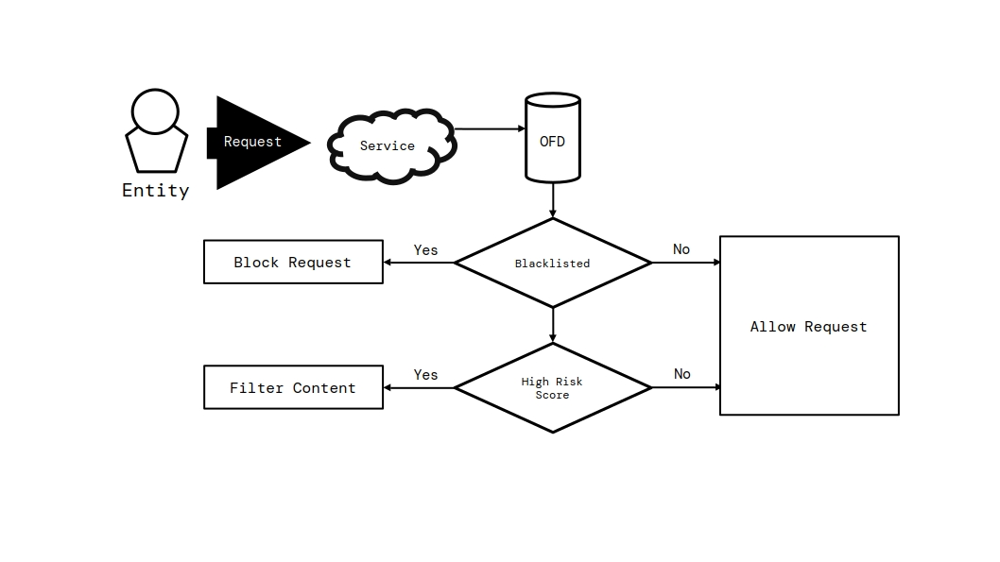
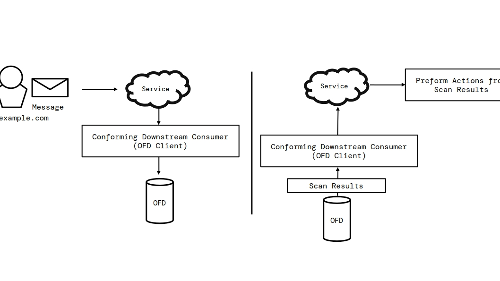
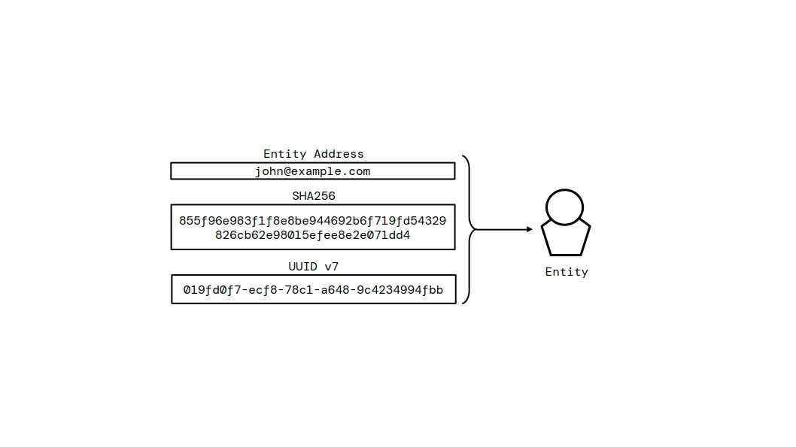
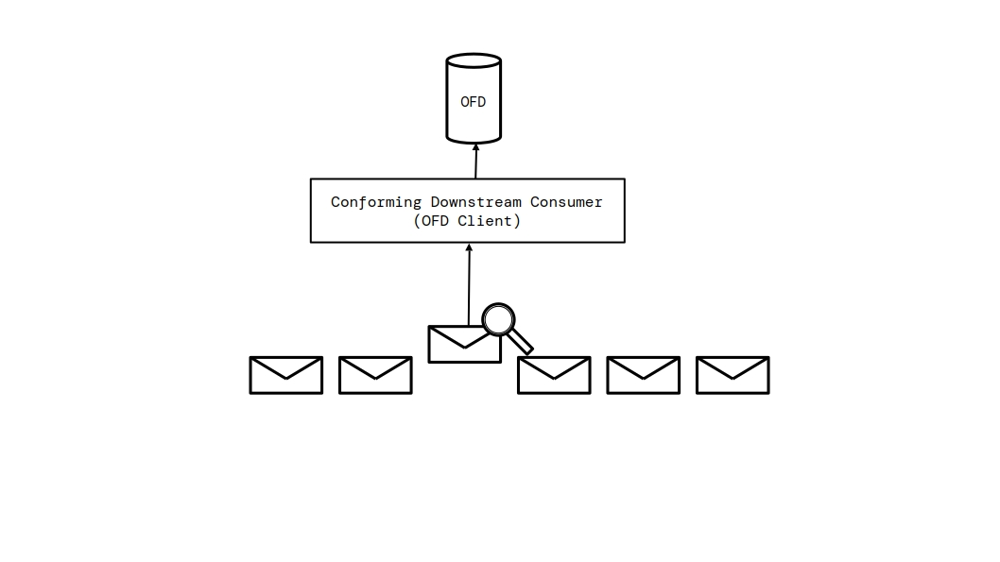
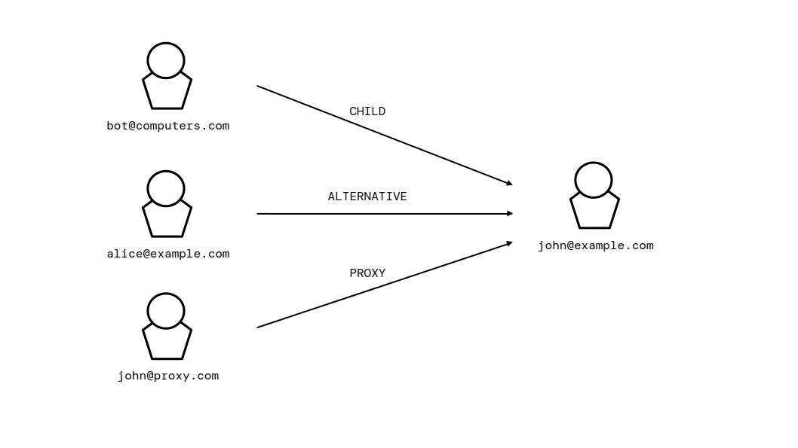

1. Introduction
This section is non-normative.
The Open Federated Database (OFD) protocol is an HTTP application protocol through which independent network services learn from observations that other services have made about the entities that contact them. A service that participates may operate a host, which is an HTTP interface to a federated database of records about the entities the host has encountered. Alternatively, a service may participate by querying a host operated by another provider as a downstream consumer, or by contributing records to such a host as a client.
The protocol is semi-decentralized: there is no central authority, required registry, or shared server. What makes OFD federated is that independent hosts implement a common protocol and independently identify the same entities using entity addresses and deterministic entity identifiers. A host is not required to replicate another host’s database.
Participation does not require a host to disclose information beyond the entity
identifiers and records it chooses to share. An entity identifier, such as
john@example.com, can itself be personal information; a host SHOULD consider
that risk when deciding what to expose.
1.1. Overview
A service on the internet—a mail server, a firewall, an application—is contacted by entities it may not know. It cannot tell from a request alone whether an entity is trustworthy or abusive, so it must choose whether to serve the request, block it, or filter its content. OFD gives services the information to make that choice.
The records of a federated database are built and managed by operators acting through clients: software that performs the operations of an operator automatically, according to its configuration. The services that query the records of a host before deciding how to treat an entity are its downstream consumers. They read the database; they are never required to write to it.
1.2. How the Database Is Used
A downstream consumer uses the federated database to decide, for each entity it encounters, whether to serve, block, or filter the request. Figure 1 illustrates the flow.

The flow works as follows. When a service is contacted by an unknown entity, it queries one or more hosts for the records of that entity before handling the request. If the entity is subject to an active blacklist record, the service blocks the request outright; otherwise, if the reputation the host assigns to the entity indicates a high risk, the service filters or flags the content instead of serving it unmodified; otherwise, the service serves the request normally.
Two properties of this flow are essential. First, the decision rests with the service, not with the federated database: a host only reports what it knows, and a service is free to weigh the records of several hosts, apply its own policy to reputation scores, and combine the database with its other signals. Second, the flow is not one-directional: a service that encounters abuse may push its own observations into the federated database—as evidence, reports, or blacklist records—so that the next service to encounter the same entity can act on them. Contributing is optional, and never required of a service that only reads.
2. Scope
This specification is normative for three kinds of products:
-
conforming hosts, which operate a federated database and expose it over HTTP or HTTPS;
-
conforming clients, which interact with a host as an operator and build the data of the database; and
-
conforming downstream consumers, which query the records and telemetry of a host before deciding whether to block an entity or filter its content, without contributing records of their own.
The requests and responses defined by this specification are normative and interchangeable between implementations: a conforming host MUST understand and produce them as defined here, and a conforming client MUST be able to rely on them regardless of the technology a host uses internally.
The following are explicitly out of scope: the internal storage, database design, deployment technology, and content classification mechanism of a host, since an implementation MAY use any technology so long as the requests and responses it produces conform to this specification; the definition of what content is malicious, since hosts define their own policies, tags, and assessments; the user interfaces and operational tooling around a host; and inter-host synchronization and replication, since this specification defines only the interface a host exposes, and the ways in which hosts consume each other’s data as downstream consumers are the same interfaces, used openly.
3. Conformance
The key words MUST, MUST NOT, REQUIRED, SHALL, SHALL NOT, SHOULD, SHOULD NOT, RECOMMENDED, NOT RECOMMENDED, MAY, and OPTIONAL in this document are to be interpreted as described in BCP 14 [RFC2119] [RFC8174] when, and only when, they appear in all capitals, as shown here.
All text of this specification is normative except sections explicitly marked as non-normative, examples, and notes. Examples in this specification are introduced with the words "for example" or are set apart from the normative text, and informative notes begin with the word "Note".
3.1. Classes of Products
A conforming host is any implementation that exposes the OFD interface and fulfills all the requirements identified in this specification for hosts.
A conforming client is any implementation that interacts with one or more conforming hosts and fulfills all the requirements identified in this specification for clients.
A conforming downstream consumer is any implementation that queries one or more conforming hosts for the records and telemetry of an entity and fulfills all the requirements identified in this specification for downstream consumers.
4. Terminology
- access token
-
An opaque, 32-character string that authenticates an operator. A request presents it in the
Authorizationheader using theBearerscheme [RFC6750]. - authentication
-
The process by which a host verifies the identity of an operator from the access token presented in a request.
- actor
-
An individual, service, or automated program that interacts with a service. An entity is the identifier under which a service observes an actor; an entity identifier does not by itself establish the actor’s real-world identity.
- audit log
-
The chronological record of the operations performed on a federated database. Each entry records the type of operation, a message, the timestamp, and references to the affected records—operator, entity, blacklist, evidence, and file attachment. A host designates each entry type as public or private.
- base URL
-
The URL at which a host serves the OFD interface. Every path defined in this specification is relative to the base URL of the host.
- client
-
Software that interacts with a host as an operator: a bot, monitoring program, or integration that performs the operations of an operator automatically, according to the configuration set by its maintainer or by the administrators using it. Clients build the data of the federated database: they monitor activity, submit entities, evidence, reports, and file attachments, and MAY submit content for scanning and act on the results of the scan.
- downstream consumer
-
A service that queries the records and telemetry of a host before deciding whether to block an entity or filter its content.
- client permissions
-
The permission group that authorizes an operator to submit information to the federated database: registering and updating entities, setting and clearing entity relationships, submitting evidence and reports, uploading file attachments, and scanning content.
- collection
-
A resource of a host that groups the records of one kind: for example, the entity registry, or the records of evidence or of reports.
- blacklist record
-
A decision by an operator to block an entity. A blacklist record has an incident type and is either temporary, expiring at a given time, or permanent. It is active until an operator lifts it or its expiry passes, MAY reference the report supporting the decision, and an entity MAY have any number of blacklist records.
- entity
-
The identifier under which a service observes an actor. An entity record contains the entity’s entity address, host-local UUID, deterministic SHA-256 identifier, metadata, reputation, and relationships.
- entity host
-
The namespace or service component of an entity address. It identifies the service responsible for interpreting an entity’s local part and is independent of the host that stores the entity record.
- entity address
-
The canonical, protocol-independent representation of an entity. A named entity address has the form
local-part@entity-host; a host entity address consists of the entity host alone. - canonical entity address
-
An entity address after applying the canonicalization rules in § 8.2 Entity Address Canonicalization. It is the input to the deterministic SHA-256 identifier.
- entity identifier
-
One of three forms that resolves an entity record: an entity address, its deterministic SHA-256 identifier, or the UUID assigned by the host storing that record. The address and SHA-256 identifier have universal scope; the UUID is host-local.
- entity registry
-
The collection of entity records a host keeps about the entities it has encountered.
- entity relationship
-
A link between two entities in the entity registry: an alternative account of the same actor, a proxy relaying for the target, or a child entity dependent on the target.
- evidence
-
Information submitted about an entity to support deciding whether the entity should be trusted. Evidence contains text content, a note, a tag, an optional reference to a report, an optional classification flag, an optional set of file attachments, a confidentiality flag, and the timestamps of its creation and last update. A confidential evidence record is visible only to an operator with management permissions. Other records MAY expose its UUID as an opaque reference; that reference does not grant access to the evidence record.
- federated database
-
The collection of records a host keeps about the entities it has encountered: the entity registry, evidence, blacklist records, reports, file attachments, operators, and the audit log.
- file attachment
-
A record of a file uploaded as part of the evidence of an entity, described by its file name, size, and media type. Each attachment belongs to one evidence record, and an evidence record MAY have any number of attachments.
- host
-
A service that operates a federated database and serves it over HTTP or HTTPS at its base URL: the provider of the database. The services that query the database are its downstream consumers.
- management permissions
-
The permission group that authorizes an operator to manage the records of the federated database. Management permissions inherit all client permissions. In addition, they authorize the deletion of records, the management of blacklist records and of the whitelist, the clearing of reputation, access to confidential evidence, and the assignment and closure of reports.
- method
-
A discrete operation exposed by a host, identified by a method name and bound to a route pattern paired with an HTTP request method.
- method name
-
The unique lower camel case identifier of a method, such as
blacklistEntityorgetEvidenceRecord. - operator
-
An account on a host used to manage the federated database on behalf of a service. An operator has a name, a disabled flag, an
auto_assignflag, an access token, and one or more permission groups. - operator permissions
-
The permission group that authorizes an operator to manage the operators of the host: creating, deleting, enabling, and disabling operator accounts, modifying their names and permission groups, generating access tokens, managing the
auto_assignflag, and updating evidence tags. Operator permissions do not inherit client permissions or management permissions. - permission group
-
A set of privileges granted to an operator. This specification defines three permission groups: client permissions, management permissions, and operator permissions.
- record
-
A discrete item stored in a federated database: an entity, an operator, evidence, a blacklist record, a report, a file attachment, or an audit log entry. Every record is identified by a UUID.
- report
-
A record made against an entity documenting an incident. A report contains the incident type, a message, the operator that submitted it, the entity it reports (which MAY be anonymous), an optionally assigned operator, an opened flag, an automated flag, and the timestamps of its creation and last update. A report is opened when created and closed when resolved.
- reputation
-
An integer score assigned to an entity by a host. A host MUST constrain the score to the inclusive range −1000 through 1000. A new entity has a default reputation of 0. Lower values indicate that the host considers the entity more likely to be abusive; higher values indicate greater trust.
- risk score
-
A numeric, content-specific score produced by a host while scanning. It starts at 50 before the host applies its own factors. Higher values indicate greater risk; lower values indicate lower risk.
- resource
-
A distinct item of information exposed by a host at a path of its base URL: a collection, a single record, or a derived view such as a search result.
- root access token
-
A server-level secret configured by a host that authenticates the root operator.
- root operator
-
The built-in operator of a host authenticated by the root access token; the administrator of the federated database.
- semi-decentralized
-
Describing a system in which participants operate independent services that interoperate through a shared, open protocol rather than a central authority.
- service
-
A network service on the internet—a mail server, a firewall, an application—that is contacted by entities and that may operate a host, contribute records to hosts as a client, or query them as a downstream consumer.
- system operator
-
The reserved operator of a host used for automatic operations.
- telemetry
-
The statistics and configuration a host exposes about its federated database: how many records it holds and which domains it exposes publicly. Downstream consumers use telemetry to learn what is available on a host without authentication.
- whitelist
-
A trust mark that a host applies to an entity it considers non-malicious.
5. Architecture
The OFD protocol involves four parties, defined in § 4 Terminology: a host operates a federated database; an operator manages the database on behalf of a service; a client acts as an operator to build the records of the database automatically; and a downstream consumer queries the records before deciding how to treat an entity.
The OFD interface exposed by a host comprises three surfaces. The information surface describes the host itself—its identity, the version of the protocol it implements, the public-accessibility information it publishes, and how many records its federated database holds—and is always public. The data surface is the federated database itself: the collections of records and the operations that read and modify them, with access governed by host configuration and the permissions of the requester. The analysis surface queries and inspects content beyond the stored records, including search across the federated database and content scanning; how a host derives the classification of scanned content is internal to the host and not part of the interface.
The protocol is stateless. A host MUST NOT require a client to maintain a session, and MUST treat every request as independent, authenticated on its own merits as described in § 9.6 Authentication.
6. Data Model
The federated database of a host is a set of records organized into collections. Each collection groups the records of one kind; each record is identified by a UUID assigned by the host when the record is created, and carries the timestamps of its creation and, where applicable, last update.
The following record kinds are defined by this specification.
- Entity registry
-
Tracks what the host knows about an actor: its identifiers, metadata, whether it is whitelisted, its reputation, its entity relationships, and timestamps.
- Operators
-
The accounts that manage the database; an operator record contains a name, a disabled flag, an
auto_assignflag, and the permission groups granted to the operator. - Evidence
-
Carries the information collected about an entity: text content, a note, a tag, an optional reference to a report, an optional classification flag, a confidentiality flag, optional file attachments, and timestamps.
- Blacklist records
-
Record a decision to block an entity; each has an incident type and is either temporary, expiring at a given time, or permanent. It is active until lifted by an operator or its expiry passes, MAY reference the report supporting the decision, and an entity MAY have any number of them.
- Reports
-
Records made against an entity documenting an incident: the type of the incident, a description, the operator that submitted it, the entity being reported, an optionally assigned operator, an opened flag, an automated flag, and timestamps. A host MAY create reports automatically under its own policy; such reports have their
automatedmember set to true. - File attachments
-
Records of files uploaded as part of the evidence of an entity; each attachment belongs to one evidence record, and an evidence record MAY have any number of attachments.
- Audit log
-
The chronological record of the operations performed on the federated database; every entry records the type of operation, a message, the timestamp, and the records affected.
The record kinds work together. Blacklist records and reports are made against the entities of the entity registry; evidence documents what was observed about an entity and MAY reference a report; file attachments belong to evidence; and audit log entries point at the records they affected. Every change to the federated database—whether by an operator or by automation—is recorded in the audit log, so the history of an entity can be traced after the fact.
A host keeps the history of its federated database: every record preserves when it was created and last changed, and the audit log preserves what was done to the database and by whom, even after the affected records change or are removed. A host publishes telemetry about its federated database, including record counts and any public-accessibility information it chooses to expose, through the information surface. A downstream consumer can use this information to determine what is available.
6.1. Population of the Database
Clients build the data of a federated database. They monitor activity, submit entities, evidence, and reports, and raise blacklist records when their configuration calls for it. Optionally, a client may also collect information actively and silently—for example, the content exchanged in a chat channel it monitors—and submit that content to the host to be scanned, then take actions depending on the results of the scan.

A host MAY create reports automatically under a policy it defines. An
automatically created report MUST have its automated member set to
true and is otherwise an ordinary report. The conditions for automatic report
creation, the supporting evidence it records, and any subsequent assignment are
internal to the host.
A host MAY classify content with any internal mechanism it chooses. The classification mechanism is not part of the OFD interface: a scan request carries content in, and a scan response carries the results out, but how a host derives the classification—whether from the past data it has accumulated, from the reputation of the involved entities, or from any other analysis—is internal to the host, MAY differ between hosts, and is not defined by this specification.
7. Host Policy
OFD standardizes the representation and exchange of records, not the policy by which a host derives them. A host determines, among other things, what causes reputation changes, how content is classified, when reports or blacklist records are created, how long records are retained, what information is public, and how automated systems operate. A host SHOULD document these policies so that downstream consumers can evaluate the meaning and reliability of its records.
This version of OFD does not standardize record replication, imported-record provenance, or a source field. A record returned by a host is that host’s local record and does not express whether the host learned information directly or from another host. A consumer seeking independent assessments MUST query each host directly and MUST NOT infer independent observations from matching records returned by different hosts.
8. Identification of Entities
OFD separates universal entity identity from host-local record identity. The entity address is the canonical representation of an entity across OFD hosts. The SHA-256 identifier is deterministically derived from that canonical address. A UUID identifies the record that one specific host created for the entity.
The entity host in an entity address identifies the namespace in which the
local part has meaning. It is not the OFD host that stores or serves the record.
For example, 123456789@telegram.org may be stored by
https://ofd.example.com; creating that record grants the OFD host no authority
over telegram.org or the entity.

8.1. Entity Identifier Forms
The following forms address an entity:
| Identifier | Scope | Purpose |
|---|---|---|
| Entity address | Universal | The canonical identity of the entity. |
| SHA-256 identifier | Universal and deterministic | A compact, independently derivable representation of the canonical entity address. |
| UUID | Host-local | The identity of an entity record within the host that assigned it. |
A UUID MUST NOT be assumed to identify the same entity across hosts. Hosts that implement the same canonical entity address MUST derive the same SHA-256 identifier. A downstream consumer MAY query multiple hosts with the same entity address and compare their independent records; equal entity identity does not imply equal reputation, evidence, or authority.
8.2. Entity Address Canonicalization
For a named entity, the canonical entity address is the UTF-8 [RFC3629] string
local-part@entity-host. The local part is case-sensitive and MUST
contain only ASCII letters, digits, ., _,
%, +, or -.
The entity host MUST NOT contain whitespace, a port, a path, a query, a fragment, or a trailing dot. A DNS [RFC1034] entity host MUST use lowercase ASCII labels. An IPv4 entity host MUST use four decimal octets separated by dots, with no leading zero except for the value zero. An IPv6 entity host MUST use its lowercase compressed textual representation [RFC5952]. A host entity uses the canonical entity host string alone. A host MUST reject an entity address that is not already in canonical form with HTTP 400.
The registrable domain of a DNS entity host is its public suffix, as
determined by the Public Suffix List, plus
the one label that precedes it; for example, the registrable domain of both
sub.example.com and example.com is
example.com, and that of a.b.example.co.uk is
example.co.uk. A host that is itself a public suffix, and an IPv4 or
IPv6 entity host, has no registrable domain.
As the one exception to that rejection, a DNS entity host whose first label is
www denotes the same entity as the host without that label, provided
the remainder still has a registrable domain. A host MUST remove the leading
www. label, rather than reject the address, before storing the entity
address or deriving its SHA-256 identifier, so that www.example.com
and example.com address the same entity. The removal is repeated
while the host still begins with a www label that can be removed,
so that www.www.example.com also becomes example.com.
The label MUST NOT be removed when the remainder has no registrable domain, as
in www.com or www.co.uk. Any other subdomain, such as
sub.example.com, is a distinct entity.
8.3. Identifier Hash
The SHA-256 identifier is the SHA-256 digest [FIPS-180-4] [RFC6234] of the UTF-8 [RFC3629] bytes of the canonical entity address, serialized as a 64-character lowercase hexadecimal string. It is a deterministic cryptographic identifier, not an anonymity or confidentiality mechanism.
8.4. Use of Identifiers
Record references—evidence, reports, blacklist records, operators, file attachments, and audit log entries—are addressed by their UUID. Entities are addressed by any entity identifier form.
9. Protocol Fundamentals
This part of the specification defines how the OFD interface is carried over HTTP: the transport, the path structure, the data formats, and the request and response model. It is the foundation on which the methods of the interface are defined.
9.1. HTTP and Transport
The OFD interface is carried over HTTP [RFC9110]. The term HTTP includes HTTP over TLS (HTTPS) as defined in [RFC9110]; a host MAY serve its interface over HTTPS and SHOULD do so when authentication or confidential data is involved. A host MUST support HTTP/1.1 [RFC9112], and MAY support any newer version of HTTP.
Every path defined in this specification is relative to the base URL of
the host: a request to a host whose base URL is https://db.example.org and
whose resource path is /entities is made to the URL
https://db.example.org/entities.
The protocol is stateless. Each request is self-contained: it identifies the operation to perform, carries its own parameters, and, when authentication is required, presents its own access token. A host MUST NOT rely on session state established by earlier requests.
Responses are transmitted with the media type application/json; charset=utf-8
unless a method specifies otherwise, as for file downloads. Requests carry
their parameters in the query string, in a JSON or form-encoded body, or, for
file uploads, in a multipart/form-data body, as defined in
§ 9.4 Requests.
9.2. Path Structure
The resources of a host are laid out under a small set of path domains, each serving one collection of the federated database or one derived view. The domains and their root paths are:
| Domain | Root path | Content |
|---|---|---|
| Information | /info
| Description of the host and the state of its federated database. |
| Search | /search
| Search across the database. |
| Scan | /scan
| Analysis of submitted content, returning a classification, suggested action, and risk assessment. |
| Audit | /audit
| The audit log of the database. |
| Entities | /entities
| The entity registry. |
| Operators | /operators
| Operator accounts. |
| Evidence | /evidence
| Evidence records. |
| Blacklist | /blacklist
| Blacklist records. |
| Reports | /reports
| Reports. |
| Attachments | /attachments
| File attachments. |
The root path / serves the audit log collection.
9.2.1. Route Patterns
A route pattern is the path expression bound to a method: a literal path, or a path that contains dynamic segments. Two kinds of dynamic segments are defined:
-
UUID segments, matching a 36-character UUID, address records of the federated database;
-
entity identifier segments, matching an entity identifier, address records of the entity registry.
An entity identifier segment accepts every entity identifier form: the
UUID, the SHA-256 identifier, or the entity address. The entity address
may be a named entity address (local-part@entity-host) or a host
entity address (the entity host alone), and its entity host may be a DNS name,
an IPv4 address, or an IPv6 address. An entity address in a path segment MUST
be in canonical form, as specified in § 8.2 Entity Address Canonicalization; a
host MUST reject a path segment that is not a valid entity identifier with
HTTP 400. For example, GET /entities/example.com,
GET /entities/john@example.com, and GET /entities/2001:db8::1 each address
an entity by its entity address.
Literal paths take precedence over route patterns that contain dynamic
segments. For example, the path /entities/search is served by the search
method of the entities domain, never by a pattern that would match
/entities/{identifier}. A host MUST NOT match a dynamic segment to a string
that satisfies a literal sub-path of the same domain, whatever the request
method. An entity whose entity address equals such a literal sub-path, such as
a host entity named search or top-threats, is therefore addressed in a path
by its SHA-256 identifier or its UUID.
9.2.2. Route Conventions
The methods of the interface follow a uniform route convention.
Collection routes address a collection of records, for example
GET /entities and POST /reports. Item routes address a single
record, for example GET /entities/{identifier} and
DELETE /evidence/{uuid}. Sub-resource routes address records related to a
parent record, for example GET /entities/{identifier}/evidence and
GET /operators/{uuid}/blacklist. Action routes address a state transition
of a record, for example PATCH /blacklist/{uuid}/lift and
PATCH /reports/{uuid}/close. Search routes query a collection, for
example GET /entities/search and GET /blacklist/search.
The HTTP request method conveys the intent of the request, as summarized in the following table:
| HTTP method | Semantics | Examples |
|---|---|---|
| GET | Query and read records and derived views. | GET /entities, GET /reports/{uuid}
|
| POST | Create a record. | POST /evidence, POST /operators
|
| PATCH | Update a record or transition its state. | PATCH /entities/{identifier}, PATCH /reports/{uuid}/close
|
| DELETE | Remove a record. | DELETE /evidence/{uuid}
|
| PUT | Upload a file to the attachments domain. | PUT /attachments
|
9.3. Data Formats
The OFD interface exchanges JSON documents [RFC8259]. Records and JSON request bodies are objects whose member names are lowercase and use underscores to separate words, such astext_content and file_name.
Points in time are transmitted as Unix timestamps: the number of seconds since
the epoch, in UTC, as a JSON integer. Record identifiers are transmitted as
36-character lowercase strings in the canonical 8-4-4-4-12 hyphenated form
of UUIDs [RFC9562], and hosts generate UUIDs of version 7 so that
records are ordered by their time of creation. Booleans are transmitted as
JSON true or false in JSON request bodies, and as the strings true or
false in query strings and form bodies. Text is transmitted as JSON strings,
and scalar quantities are transmitted as JSON numbers. A member whose definition
requires a whole-number quantity, such as a size or timestamp, is transmitted
as a JSON integer. Values drawn from a fixed set, such as record types,
relationship types, category values, ordering values, and classification values,
are transmitted as uppercase strings. A host SHOULD accept such values
case-insensitively when received from a client; the canonical form returned in
responses is uppercase.
For example, a category value of with_relationship is treated as
equivalent to WITH_RELATIONSHIP. A request that carries a value
outside the defined set is a client error (HTTP 400), except for the
category, by, and order parameters of
list and search methods, which are treated as specified in
§ 9.4.4 Pagination, Filtering, and Ordering. A member that carries no value is transmitted
either as JSON null or omitted from the object, and a client MUST treat both
representations as equivalent.
9.4. Requests
A request to the OFD interface identifies the operation by its path and HTTP request method, carries its parameters, and, where required, presents authentication. Parameters are name/value pairs; a value is a string, an integer, a boolean, or, for parameters that accept structured values, a JSON object.
9.4.1. Parameter Sources
Parameters are read from the query string of the request URI [RFC3986], from a
form-encoded request body for requests with the media type
application/x-www-form-urlencoded [URL], or from a JSON request body for requests
with the media type application/json; charset=utf-8. A host resolves a
parameter deterministically; where the same parameter appears in several
sources, a form-encoded body takes precedence over the query string, and the
query string takes precedence over a JSON body.
A request body that declares the media type application/json but is not
parseable as JSON is a client error (HTTP 400).
9.4.2. JSON Request Bodies
Parameters that accept structured values, such as entity metadata, are carried as members of a JSON object in the request body. For example, a request that registers an entity with metadata is:
POST /entities
Authorization: Bearer <token>
Content-Type: application/json; charset=utf-8
{
"host": "example.com",
"id": "admin",
"metadata": {"service": "webmail"}
}
9.4.3. File Uploads
The upload of a file attachment is a request with the media type
multipart/form-data [RFC7578]. The uploaded file is carried in a part named
file. A client MUST NOT submit a file attachment through any other
parameter.
9.4.4. Pagination, Filtering, and Ordering
Methods that return a list of records are paginated. Unless a method specifies otherwise, they accept the following query parameters:
-
limit, the maximum number of records to return. A host enforces a maximum for each method. Whenlimitis omitted, a list method uses the host maximum, and a search method uses 10. A value less than 1 or greater than the host maximum is not an error: a list method uses its host maximum instead, and a search method clamps the value to the range from 1 through its host maximum. -
page, the page to return, starting at 1. A value less than 1 is treated as 1. A page beyond the last record yields an empty array. -
category, a filter drawn from the category values defined for the collection. -
by, the member to sort by, drawn from the ordering values defined for the collection. -
order, the sort direction,ASCorDESC.
A host MUST ignore a category, by, or
order value that it does not recognize, and apply its default:
no category filter, and its default ordering for the collection. A host SHOULD
order records deterministically, so that consecutive pages neither repeat nor
omit records while the collection is unchanged.
Search methods take a query parameter q. A host trims leading and
trailing whitespace from the query and rejects the request with a client error
(HTTP 400) when q is absent or empty, or when the trimmed query is
shorter than two characters. A search matches records whose searchable members
contain the query as a substring. The characters % and _ in the query are
matched literally.
9.5. Responses
Every response of the OFD interface is a JSON document, transmitted with the
media type application/json; charset=utf-8, except the download of a file attachment, which transmits the file itself.
9.5.1. Success Responses
A success response carries the result of a completed method: a serialized record, an array of records, or a generated identifier. When a method produces no result data, the response is the success envelope, a JSON document of the form:
{"success": true}
Each method definition specifies its successful status code and response body. Methods that create an independently addressable record normally use HTTP 201 Created and include its UUID in the response body, unless their definition specifies otherwise. Methods that query or read normally use HTTP 200 OK and carry the result directly in the response body: a single record is a JSON object, and a list of records is a JSON array.
9.5.2. Error Responses
An error response is a JSON document with the members:
-
success, fixed to false;
-
code, the HTTP status code of the error;
-
message, a human-readable description of the error.
The message member is intended for people and is not meant to be
parsed. A host MAY prefix it with the reason phrase of the status code, as in
Unauthorized: Authentication required. A client MUST determine the class of
the error from the status code and the code member, not from the
message.
The error status codes used by the OFD interface are as follows. HTTP 400 means the request could not be processed: missing or invalid parameters, an undecodable JSON body, or a path that matches no method. HTTP 401 means authentication is required, or the presented access token is invalid. HTTP 403 means the authenticated operator is not authorized to perform the method: the operator is disabled or lacks the required permissions. HTTP 404 means a referenced record does not exist, or the method is not available on the host, such as a search method on a host with search disabled. HTTP 500 means an internal error occurred; a host MUST NOT disclose internal details in an error response, and uncaught errors are reported with the generic message "Internal Server Error".
For example, an unauthenticated request to an operation that requires authentication is answered with:
HTTP/1.1 401 Unauthorized
Content-Type: application/json; charset=utf-8
{"success": false, "code": 401, "message": "Unauthorized: Authentication required"}
9.5.3. Response Headers
Responses are transmitted with the Content-Type application/json; charset=utf-8
header and with cross-origin resource sharing (CORS) headers [FETCH]. The
Access-Control-Allow-Origin header permits a cross-origin request from an
origin whose hostname equals the hostname of the configured base URL of
the host; when the Origin header of the request matches, the host echoes it
and responds with the Vary: Origin header, otherwise it responds with its
configured base URL. The Access-Control-Allow-Methods header is set to POST,
PUT, GET, DELETE, and PATCH. The Access-Control-Allow-Headers header is set
to Content-Type and Authorization.
9.6. Authentication
Some methods are publicly accessible; others require authentication. Whether a method requires authentication is determined by the definition of the method together with host configuration. A host MUST authenticate an operator before executing a method that requires authentication, and MUST NOT execute such a method on behalf of an unauthenticated requester.
9.6.1. Access Tokens
An access token authenticates an operator. Requests present the access token in the Authorization header using the Bearer scheme [RFC6750]:
Authorization: Bearer <token>
The validity of a presented access token is established as follows. A token that is not exactly 32 characters in length is malformed and is rejected as a client error (HTTP 400). A well-formed token that does not correspond to any operator is rejected as an authentication error (HTTP 401). A token that corresponds to a disabled operator is rejected as a permission error (HTTP 403). A token presented with a request that does not require authentication is ignored.
9.6.2. Authenticated Operator
The authenticated operator of a request is the operator bound to the access token presented by the request. A request that presents no token has no authenticated operator; a method that requires authentication and receives such a request responds with an authentication error (HTTP 401).
Operators whose access token is unset and the system operator MUST NOT be authenticated.
9.6.3. Root Operator
A host MAY configure a root access token. When the root access token is presented, the host authenticates the root operator: the administrator of the federated database. The root operator:
-
is created automatically when it does not exist, so that the host can be administered before any operator has been provisioned;
-
cannot be disabled;
-
is authoritative over the configuration of the host.
A host MUST NOT allow the root access token to be disclosed or revoked by any operator other than the root operator.
9.7. Authorization
Authorization is governed by the permission groups granted to an operator. This specification defines three permission groups: client permissions, management permissions, and operator permissions. A host grants each group independently, and an operator MAY hold several groups at once. The root operator is authorized to perform every operation regardless of the groups it holds.
9.7.1. Permission Groups
client permissions authorize an operator to submit information to the federated database: registering and updating entities, setting and clearing entity relationships, submitting evidence and reports, uploading file attachments, and scanning content.
management permissions authorize an operator to manage the records of the federated database. Management permissions inherit all client permissions. In addition, they authorize the deletion of records, the management of blacklist records and of the whitelist, the clearing of reputation, access to confidential evidence, and the assignment and closure of reports.
operator permissions authorize an operator to manage the operators of the host: creating, deleting, enabling, and disabling operator accounts, modifying their names and permission groups, generating access tokens, and updating evidence tags. Operator permissions do not inherit client permissions or management permissions.
9.7.2. Public Accessibility
Some operations of the OFD interface are available to requests without an authenticated operator. Whether a domain of the federated database is publicly accessible is a matter of host configuration: a host MAY expose a domain to the public or MAY require authentication to access it.
Each of the following MAY be exposed to unauthenticated requests or require authentication, subject to the requirements of the relevant method. A host publishes its choice for each in the ServerInformation object, under the member given in parentheses:
-
the audit log (
public_audit_logs), together with the list of audit log entry types that unauthenticated requests may see (public_audit_logs_visibility); -
evidence and the file attachments of non-confidential evidence (
public_evidence); -
blacklist records (
public_blacklist); -
the entity registry (
public_entities); -
entity metadata (
public_entity_metadata); -
reports (
public_reports); -
content scanning (
public_scan_content); -
entity relationship queries (
public_query_entity); -
the cross-collection Search method (
public_search).
The dedicated search method of each domain, such as Search Entities, follows
the accessibility of its domain, and Search Operators is always public; the record types for which such a method is
enabled and public are published as search_types and
public_search_types. A downstream consumer can therefore
determine from the server information alone what is available without
authentication.
The server information method is always public. Operator records are public information: the List Operators, Get Operator, and Search Operators methods, and operator records in the results of the Search method, are available to unauthenticated requests, whatever the host configuration.
9.7.3. Permission Matrix
The following matrix lists the operations of the OFD interface and the authorization required to perform each. The columns denote the requester: "Public" is a request without an authenticated operator; "Client", "Manager", and "Operator manager" are requests authenticated as operators holding client permissions, management permissions, and operator permissions, respectively. A cell marked "Configurable" is public when the host exposes the domain, and requires an authenticated operator when the host does not; the permission required of an authenticated operator is unaffected. A request that requires authentication and presents no access token MUST be rejected as an authentication error (HTTP 401), and a request by an operator that lacks the required permission MUST be rejected as a permission error (HTTP 403).
| Operation | Public | Client | Manager | Operator manager |
|---|---|---|---|---|
| Server information | Yes | Yes | Yes | Yes |
| Read the audit log | Configurable | Yes | Yes | Yes |
| Read evidence and attachment content | Configurable | Yes | Yes | Yes |
| Read the blacklist | Configurable | Yes | Yes | Yes |
| Read entities | Configurable | Yes | Yes | Yes |
| Query entity relationships | Configurable | Yes | Yes | Yes |
| Read reports | Configurable | Yes | Yes | Yes |
| Scan content | Configurable | Yes | Yes | No |
| Search | Configurable | Yes | Yes | Yes |
| Read entity metadata | Configurable | Yes | Yes | Yes |
| Read operator accounts | Yes | Yes | Yes | Yes |
| Read one’s own operator account | No | Yes | Yes | Yes |
| Generate one’s own access token | No | Yes | Yes | Yes |
| List one’s own opened reports | No | Yes | Yes | Yes |
| Register or update entities | No | Yes | Yes | No |
| Submit evidence | No | Yes | Yes | No |
| Submit reports | No | Yes | Yes | No |
| Upload attachments | No | Yes | Yes | No |
| Manage entity relationships | No | Yes | Yes | No |
| Delete entities, evidence, or reports | No | No | Yes | No |
| Manage blacklist records | No | No | Yes | No |
| Set the whitelist, clear reputation | No | No | Yes | No |
| Manage evidence confidentiality | No | No | Yes | No |
| Close or assign reports | No | No | Yes | No |
| List and delete attachments | No | No | Yes | No |
| Access confidential evidence | No | No | Yes | No |
| Manage operators | No | No | No | Yes |
| Manage operator permission groups and access tokens | No | No | No | Yes |
| Update evidence tags | No | No | No | Yes |
Note: A cell marked "Configurable" is public when the host exposes the
domain, and requires an authenticated operator when the host does not. The
"Manage operators" row covers creating, deleting, enabling, disabling, and
renaming operator accounts, modifying their permission groups, and
managing the auto_assign flag. "Manage entity relationships"
covers Set Entity Relationship and Clear Entity Relationship, and "Update
evidence tags" covers Update Evidence Tag. "Read operator accounts" covers List Operators, Get
Operator, and Search Operators, and "Read one’s own operator account"
covers Get Self Operator. Reading
a "Configurable" domain, reading one’s own operator account, generating
one’s own access token, and listing one’s own opened reports require only
an authenticated operator, whatever permission groups it holds.
9.7.4. Visibility Rules
The following rules restrict the information exposed by the operations above.
Entity metadata is returned to every authenticated operator. It is returned
to unauthenticated requests only when the host publishes
public_entity_metadata as true; otherwise the metadata
member of every EntityRecord returned to an unauthenticated request is null.
An access token is disclosed only when an operator is created or when a token is
explicitly generated; it is not included in operator records returned by the
host.
A host MUST NOT return a confidential evidence record, or any of its members, to a requester without management permissions. A record returned to such a requester MAY contain the UUID of confidential evidence as an opaque reference. The reference MUST NOT grant access: an unauthenticated request for the confidential evidence is rejected with HTTP 401, and an authenticated operator without management permissions is rejected with HTTP 403.
A report is closed by an operator with management permissions who is also the operator to which the report is assigned, and reports that are already closed MUST NOT be closed again. An authenticated operator that scans content MUST hold client permissions, even when content scanning is public. The Search Attachments method requires management permissions.
9.8. Request Processing
All requests of the OFD interface are processed in a fixed order. The host first resolves the request to a method by matching the path and the HTTP request method against the route patterns of the interface, and responds with a client error (HTTP 400) if no route pattern matches. It then resolves the authenticated operator of the request as defined in § 9.6 Authentication, and verifies that the authenticated operator has the permissions required by the method and that the requested domain is accessible to the requester, as defined in § 9.7 Authorization. Next it resolves and validates the parameters of the request, including entity identifiers and references to records; invalid parameters are a client error (HTTP 400). It then resolves the records referenced by the parameters, returning a not-found error (HTTP 404) for a reference to a record that does not exist, and a client error (HTTP 400) for a reference that is not well-formed. The host performs the operation of the method, and methods that modify persistent state record an entry in the audit log identifying the operator, the affected records, and the action performed. Finally, the host emits the success response, or an error response if any preceding step failed. A host MUST NOT emit a success response when any step failed, and MUST NOT disclose implementation details in an error response.
10. Interface Methods
A method is a discrete operation exposed by an OFD host, identified by a unique method name and bound to a route pattern paired with an HTTP request method, as defined in § 9.2 Path Structure. Methods are grouped by the domain of the resource they operate on: server information, search and scan, audit, entities, operators, evidence, blacklist, reports, and attachments.
The following subsections define the methods of the information surface and of the analysis surface (content scanning and search), followed by the methods of the data surface, grouped by domain.
10.1. Server Information
10.1.1. Get Server Information
Method name: getServerInformation
The Get Server Information method returns the telemetry of the host and the public-accessibility information that it publishes. This method is always public, as specified in § 9.7.2 Public Accessibility; a host MUST respond to it without requiring authentication.
The request is:
GET /info HTTP/1.1
A successful response is a success response with HTTP 200 OK and a body that is a JSON ServerInformation object. The members of a ServerInformation object are:
| Member | Type | Description |
|---|---|---|
name
| string | The name of the host. |
api_version
| string | The version of the OFD interface implemented by the host. A host implementing this version of the specification reports 1.0.
|
public_audit_logs
| boolean | Whether the audit log domain is publicly accessible. |
public_evidence
| boolean | Whether the evidence domain is publicly accessible. |
public_blacklist
| boolean | Whether the blacklist domain is publicly accessible. |
public_entities
| boolean | Whether the entity registry is publicly accessible. |
public_reports
| boolean | Whether the reports domain is publicly accessible. |
public_entity_metadata
| boolean | Whether entity metadata is included in entity records returned to unauthenticated requests. |
public_scan_content
| boolean | Whether the Scan Content method is publicly accessible. |
public_query_entity
| boolean | Whether the Query Entity method is publicly accessible. |
allow_illegal_content
| boolean | Whether the host accepts reports with the ILLEGAL_CONTENT incident type, as specified in § 10.9.2 Submit Report.
|
search_enabled
| boolean | Whether search is enabled on the host. When false, every search method responds with HTTP 404. |
public_search
| boolean | Whether the cross-collection Search method is publicly accessible. |
search_types
| array of strings | The record types, as defined in § 10.3.1.1 Record type values, whose dedicated search method is enabled. Empty when search is disabled. |
public_search_types
| array of strings | The record types, as defined in § 10.3.1.1 Record type values, whose dedicated search method is enabled and publicly accessible. |
public_audit_logs_visibility
| array of strings | The audit log entry types that are publicly visible, when the audit log domain is public. |
audit_log_records
| integer | The number of audit log records held by the host. |
blacklist_records
| integer | The number of blacklist records held by the host. |
known_entities
| integer | The number of entity records held by the host. |
evidence_records
| integer | The number of evidence records held by the host. |
file_attachment_records
| integer | The number of file attachment records held by the host. |
operators
| integer | The number of operator accounts on the host. |
reports
| integer | The number of report records held by the host. |
10.2. Scan
10.2.1. Scan Content
Method name: scanContent
The Scan Content method submits one or more ContentInput objects to a host for analysis. The host extracts named entities from the text content, resolves them against the entity registry, and returns a classification, a risk score, and a suggested action. When the host is not configured to make scanning publicly accessible, the request MUST present a valid access token and the authenticated operator MUST hold client permissions.

The request is:
POST /scan HTTP/1.1 Content-Type: application/json; charset=utf-8 Authorization: Bearer <token>
The request body MUST be a JSON object containing the members below:
| Member | Type | Required | Description |
|---|---|---|---|
author
| string | No | An entity identifier for the author of the content. |
evidence
| ContentInput or array of ContentInput | Yes | One non-empty ContentInput object or a non-empty array of non-empty ContentInput objects to scan. |
top_k
| integer | No | An advisory maximum number of candidate classifications for a host to consider. Its effect on host analysis is not specified. |
threshold
| number | No | An advisory confidence threshold for host analysis. Its effect on host analysis is not specified. |
A host MUST reject a request whose evidence member is absent,
empty, not a non-empty ContentInput object or array of non-empty ContentInput
objects, or does not contain at least one non-empty text_content
member with a client error (HTTP 400).
A host MUST respond with an error response for the following conditions:
-
HTTP 400 if the evidence input is invalid or does not contain text content.
-
HTTP 401 if scanning is not public and the request is not authenticated.
-
HTTP 403 if the authenticated operator does not hold client permissions.
-
HTTP 500 if the host fails to resolve the author entity due to an internal error.
10.2.2. ScannedContent object
A successful response to the Scan Content method is a success response with HTTP 200 OK and a body that is a JSON ScannedContent object. The members of a ScannedContent object are:
| Member | Type | Description |
|---|---|---|
author_entity
| ResolvedEntity or null | The resolved author entity, if an author identifier was provided and resolved. |
resolved_entities
| array of ResolvedEntity | The entities extracted from the content and resolved against the registry. |
classification
| ContentClassification or null | A host-derived classification of the submitted text content, if the host provides one. |
suggested_action
| string or null | A host recommendation, using one of the values defined in § 10.2.2.4 Suggested action values, or null. |
suggested_lift_timestamp
| integer or null | The Unix timestamp at which the host recommends lifting a temporary action, when applicable. |
scan_results
| object | Host-defined information about the factors contributing to the result. Clients MUST NOT rely on particular member names or values. |
risk_score
| number | The content risk score described in § 10.2.2.1 Risk Score. |
10.2.2.1. Risk Score
A host starts the risk_score at 50 before evaluating the submitted
content. Higher values indicate greater risk; lower values indicate lower risk.
A host MAY apply any internal factors while evaluating content. Such factors MAY
include temporary or permanent blacklist records, classifications, entity
reputation, whitelist state, entity relationships, or other observations. For
example, a normal classification or good reputation can lower the score, while
blacklist records can raise it. The choice of factors, their weights, and the
thresholds used for suggested actions are not part of the OFD interface. Clients
MUST NOT infer a particular scoring algorithm from risk_score or
scan_results.
10.2.2.2. ResolvedEntity object
A ResolvedEntity object represents an entity that was identified in the scanned content, together with its active blacklist records and its optional parent entity. Its members are:
| Member | Type | Description |
|---|---|---|
entity
| EntityRecord | The entity record. |
entity_position
| ResolvedEntityPosition or null | The position of the entity mention in the content. |
active_blacklists
| array of BlacklistRecord | The active blacklist records associated with the entity. |
parent_entity
| ResolvedEntity or null | The resolved parent entity, if a relationship is defined. |
A ResolvedEntityPosition object contains the members offset
(integer), length (integer), and type (string). The
value of type is one of domain, url,
email, ipv4, or ipv6, depending on how
the entity was extracted from the content.
10.2.2.3. ContentClassification object
A ContentClassification object describes the classification assigned to the content by the host. Its members are:
| Member | Type | Description |
|---|---|---|
classification_flag
| string | The classification, one of NORMAL, SUSPICIOUS, or MALICIOUS.
|
confidence
| number | The confidence score of the classification. |
detected_language
| string or null | The detected language of the content, if available. |
10.2.2.4. Suggested action values
The value of the suggested_action member is one of the following
uppercase strings, or null when no action is suggested:
PERMANENTLY_BLOCK_ENTITY-
The author entity has one or more permanent blacklist records.
TEMPORARILY_BLOCK_ENTITY-
The author entity has one or more temporary blacklist records.
BLOCK_CONTENT-
The risk score is high enough to treat the content as malicious.
CAUTION-
The risk score warrants attention, but not an automatic block.
10.2.2.5. Scanning rule names
The scan_results member MAY contain a host-defined mapping of
scanning rule names to numerical contributions. Its member names, scoring model,
and meanings are not part of the OFD interface. Clients MUST NOT require a
particular rule, score, or scoring algorithm. The following discussion and rule
names are non-normative examples only:
| Rule name | Applies when |
|---|---|
AUTHOR_BLACKLISTED
| The author entity has one or more active blacklist records. |
AUTHOR_PERMANENTLY_BLACKLISTED
| The author entity has one or more permanent blacklist records. |
AUTHOR_WHITELISTED
| The author entity is whitelisted. |
AUTHOR_GOOD_REPUTATION
| The author entity has a good reputation. |
AUTHOR_BAD_REPUTATION
| The author entity has a bad reputation. |
AUTHOR_PARENT_BLACKLISTED
| The parent of the author entity has one or more active blacklist records. |
AUTHOR_PARENT_PERMANENTLY_BLACKLISTED
| The parent of the author entity has one or more permanent blacklist records. |
AUTHOR_PARENT_WHITELISTED
| The parent of the author entity is whitelisted. |
AUTHOR_PARENT_GOOD_REPUTATION
| The parent of the author entity has a good reputation. |
AUTHOR_PARENT_BAD_REPUTATION
| The parent of the author entity has a bad reputation. |
NAMED_ENTITY_BLACKLISTED
| A resolved named entity has one or more active blacklist records. |
NAMED_ENTITY_PERMANENTLY_BLACKLISTED
| A resolved named entity has one or more permanent blacklist records. |
NAMED_ENTITY_WHITELISTED
| A resolved named entity is whitelisted. |
NAMED_ENTITY_GOOD_REPUTATION
| A resolved named entity has a good reputation. |
NAMED_ENTITY_BAD_REPUTATION
| A resolved named entity has a bad reputation. |
NAMED_ENTITY_PARENT_BLACKLISTED
| The parent of a resolved named entity has one or more active blacklist records. |
NAMED_ENTITY_PARENT_PERMANENTLY_BLACKLISTED
| The parent of a resolved named entity has one or more permanent blacklist records. |
NAMED_ENTITY_PARENT_WHITELISTED
| The parent of a resolved named entity is whitelisted. |
NAMED_ENTITY_PARENT_GOOD_REPUTATION
| The parent of a resolved named entity has a good reputation. |
NAMED_ENTITY_PARENT_BAD_REPUTATION
| The parent of a resolved named entity has a bad reputation. |
CLASSIFICATION_NORMAL
| The content was classified as normal. |
CLASSIFICATION_SUSPICIOUS
| The content was classified as suspicious. |
CLASSIFICATION_MALICIOUS
| The content was classified as malicious. |
10.3. Search
10.3.1. Search
Method name: search
The Search method searches several collections of the federated database
at once for records that match a query string. Its public accessibility is
configured independently of the domains it searches and published as
public_search; when it is not public, the request MUST present a
valid access token.
A host includes a record type in the results only when the dedicated search method of that type is enabled, and only to a requester permitted to read that type: operator records to every requester, and records of every other type according to the accessibility of their domain. The host MUST apply the visibility rules of § 9.7.4 Visibility Rules to the results: confidential evidence, and the attachments of confidential evidence, are included only for an operator with management permissions, and audit log entries returned to an unauthenticated request are limited to the publicly visible entry types.
The request is:
GET /search?q={query}&type={types}&limit={limit}&page={page} HTTP/1.1
The query parameters are:
| Parameter | Required | Type | Description |
|---|---|---|---|
q
| Yes | string | The search query. It MUST contain at least two non-whitespace characters after trimming. |
type
| No | string | A comma-separated list of record types to search. If omitted, all searchable types are included. |
limit
| No | integer | The maximum number of results to return per record type. Defaults to 10. A host MAY enforce a maximum and reduce a larger value to that maximum. |
page
| No | integer | The page number for pagination, starting at 1. Defaults to 1. |
A host MUST reject a request whose q parameter is absent, empty,
or shorter than two characters with a client error (HTTP 400). A host MUST
reject a request whose type parameter contains a value that is not
one of the record type values defined in § 10.3.1.1 Record type values with a client
error (HTTP 400).
A successful response is a success response with HTTP 200 OK and a body that is a JSON array of SearchResult objects, grouped by record type. A SearchResult object has the members:
| Member | Type | Description |
|---|---|---|
type
| string | The record type, one of the values defined in § 10.3.1.1 Record type values. |
record
| object | The matching record, serialized in the form defined for its record type. |
10.3.1.1. Record type values
The value of the type member, and of each value in the
type query parameter, is one of the following uppercase strings:
ENTITY-
An entity record from the entity registry.
EVIDENCE-
An evidence record.
BLACKLISTREPORT-
A report.
ATTACHMENTAUDIT_LOG-
An audit log entry.
OPERATOR-
An operator record.
A host MUST respond with an error response for the following conditions:
-
HTTP 404 if search is disabled on the host.
-
HTTP 401 if search is not public and the request is not authenticated.
-
HTTP 500 if the host fails to perform the search due to an internal error.
10.4. Audit
The audit methods expose the audit log of the federated database. They are read-only; every method that modifies the database records an entry in the audit log as specified in § 9.8 Request Processing.
10.4.1. AuditLog object
A AuditLog object is a single entry in the audit log. Its members are:
| Member | Type | Description |
|---|---|---|
uuid
| string | The UUID of the audit log entry. |
operator
| string or null | The UUID of the operator that performed the action, when applicable. |
entity
| string or null | The UUID of the entity affected by the action, when applicable. |
blacklist
| string or null | The UUID of the affected blacklist record, when applicable. |
evidence
| string or null | The UUID of the affected evidence record, when applicable. |
file_attachment
| string or null | The UUID of the affected file attachment, when applicable. |
type
| string | The type of the entry, one of the values defined in § 10.4.1.1 Audit log type values. |
message
| string | A human-readable description of the action. |
timestamp
| integer | The Unix timestamp at which the entry was created. |
10.4.1.1. Audit log type values
The value of the type member is one of the following uppercase
strings:
| Type | Category |
|---|---|
OPERATOR_CREATED
| Operator events |
OPERATOR_DELETED
| Operator events |
OPERATOR_DISABLED
| Operator events |
OPERATOR_ENABLED
| Operator events |
OPERATOR_UPDATED
| Operator events |
ATTACHMENT_UPLOADED
| Attachment events |
ATTACHMENT_DELETED
| Attachment events |
EVIDENCE_SUBMITTED
| Evidence events |
EVIDENCE_UPDATED
| Evidence events |
EVIDENCE_DELETED
| Evidence events |
REPORT_GENERATED
| Report events |
REPORT_SUBMITTED
| Report events |
REPORT_OPERATOR_ASSIGNED
| Report events |
REPORT_CLOSED
| Report events |
REPORT_DELETED
| Report events |
ENTITY_DELETED
| Entity events |
ENTITY_BLACKLISTED
| Entity events |
ENTITY_PUSHED
| Entity events |
ENTITY_UPDATED
| Entity events |
BLACKLIST_DELETED
| Blacklist events |
BLACKLIST_LIFTED
| Blacklist events |
BLACKLIST_EXTENDED
| Blacklist events |
OTHER
| Other |
10.4.1.2. Audit log category values
The value of the category parameter for the audit methods is one of
the following uppercase strings, selecting all audit log types in the
corresponding category:
OPERATOR_EVENTS-
Operator-related entries.
ATTACHMENT_EVENTS-
File attachment entries.
EVIDENCE_EVENTS-
Evidence entries.
REPORT_EVENTS-
Report entries.
ENTITY_EVENTS-
Entity entries.
BLACKLIST_EVENTS-
Blacklist entries.
OTHER-
Entries that do not belong to another category.
10.4.1.3. Audit log ordering values
The value of the by parameter is one of the following strings:
type-
Order by the
typemember. timestamp-
Order by the
timestampmember.
The value of the order parameter is one of the following strings:
ASC-
Ascending order.
DESC-
Descending order.
10.4.2. List Audit Logs
Method name: listAuditLogs
The List Audit Logs method returns a paginated list of the entries of the audit log. The method is public when the audit log domain is configured as public; otherwise the request MUST present a valid access token.
The request is:
GET /audit HTTP/1.1
The query parameters are:
| Parameter | Required | Type | Description |
|---|---|---|---|
limit
| No | integer | The maximum number of entries to return. A host MAY enforce a maximum and reduce a larger value to that maximum. |
page
| No | integer | The page number for pagination, starting at 1. |
category
| No | string | Filter entries by category, one of the values defined in § 10.4.1.2 Audit log category values. |
by
| No | string | The field to sort by, one of the values defined in § 10.4.1.3 Audit log ordering values. |
order
| No | string | The sort direction, one of the values defined in § 10.4.1.3 Audit log ordering values. |
When the request is public, a host MUST return only entries whose type
is included in the host’s public audit log visibility list, as published in the
server information response.
A host MUST respond with an error response for the following conditions:
-
HTTP 401 if the audit log is not public and the request is not authenticated.
-
HTTP 500 if the host fails to retrieve the audit log due to an internal error.
10.4.3. View Audit Entry
Method name: viewAuditEntry
The View Audit Entry method returns a single audit log entry by its UUID.
The method is public when the audit log domain is configured as public;
otherwise the request MUST present a valid access token. A host MUST return
a public entry only if its type is included in the host’s public
audit log visibility list.
The request is:
GET /audit/{uuid} HTTP/1.1
The path parameter is:
| Parameter | Type | Description |
|---|---|---|
uuid
| string | The UUID of the audit log entry. |
A host MUST respond with an error response for the following conditions:
-
HTTP 400 if the path does not contain a UUID or the UUID is malformed.
-
HTTP 401 if the audit log is not public and the request is not authenticated.
-
HTTP 404 if the entry does not exist, or if the entry is not public and the request is unauthenticated.
-
HTTP 500 if the host fails to retrieve the entry due to an internal error.
10.4.4. Search Audit Logs
Method name: searchAuditLogs
The Search Audit Logs method searches the audit log for entries whose UUID or message matches a query string. The method is available only when the host has search enabled and has audit log search enabled. The method is public when the audit log domain is configured as public; otherwise the request MUST present a valid access token.
The request is:
GET /audit/search?q={query}&limit={limit}&page={page}&category={category}&by={by}&order={order} HTTP/1.1
The query parameters are:
| Parameter | Required | Type | Description |
|---|---|---|---|
q
| Yes | string | The search query. It MUST contain at least two non-whitespace characters after trimming. |
limit
| No | integer | The maximum number of entries to return. A host MAY enforce a maximum and reduce a larger value to that maximum. |
page
| No | integer | The page number for pagination, starting at 1. |
category
| No | string | Filter entries by category, one of the values defined in § 10.4.1.2 Audit log category values. |
by
| No | string | The field to sort by, one of the values defined in § 10.4.1.3 Audit log ordering values. |
order
| No | string | The sort direction, one of the values defined in § 10.4.1.3 Audit log ordering values. |
A host MUST reject a request whose q parameter is absent, empty,
or shorter than two non-whitespace characters with a client error (HTTP 400).
A host MUST respond with an error response for the following conditions:
-
HTTP 404 if search is disabled on the host or if audit log search is disabled.
-
HTTP 401 if the audit log is not public and the request is not authenticated.
-
HTTP 500 if the host fails to perform the search due to an internal error.
10.5. Operators
The operators methods manage the operator accounts of a host and expose sub-resources of an operator. Operator records are public information: the List Operators, Get Operator, and Search Operators methods do not require authentication. All operator management methods require an authenticated operator with operator permissions, except where noted.
10.5.1. OperatorRecord object
A OperatorRecord object represents an operator account. Its members are:
| Member | Type | Description |
|---|---|---|
uuid
| string | The UUID of the operator. |
name
| string | The display name of the operator. |
disabled
| boolean | Whether the operator account is disabled. |
client_permissions
| boolean | Whether the operator holds client permissions. |
management_permissions
| boolean | Whether the operator holds management permissions. |
operator_permissions
| boolean | Whether the operator holds operator permissions. |
auto_assign
| boolean | Whether the operator opts in to automatic report assignment. A true value does not require the host to assign a report. |
created
| integer | The Unix timestamp at which the operator was created. |
updated
| integer | The Unix timestamp at which the operator was last updated. |
10.5.1.1. Operator category values
The value of the category parameter for the list and search methods
is one of the following uppercase strings:
DISABLED-
Operators whose account is disabled.
ENABLED-
Operators whose account is enabled.
10.5.1.2. Operator ordering values
The value of the by parameter is one of the following strings:
name-
Order by the
namemember. created-
Order by the
createdmember. updated-
Order by the
updatedmember.
The value of the order parameter is one of the following strings:
ASC-
Ascending order.
DESC-
Descending order.
10.5.2. CreatedOperator object
A CreatedOperator object represents a newly created operator account and the raw access token generated for it. Its members are:
| Member | Type | Description |
|---|---|---|
uuid
| string | The UUID of the newly created operator. |
access_token
| string | The raw access token of the newly created operator. A host MUST return the raw token only in this response; it MUST NOT store the token in plaintext and MUST persist only a hash of the token. |
10.5.3. List Operators
Method name: listOperators
The List Operators method returns a paginated list of all operator accounts. The method is public; a host MUST NOT require the request to be authenticated.
The request is:
GET /operators HTTP/1.1
The query parameters are:
| Parameter | Required | Type | Description |
|---|---|---|---|
limit
| No | integer | The maximum number of operators to return. A host MAY enforce a maximum and reduce a larger value to that maximum. |
page
| No | integer | The page number for pagination, starting at 1. |
category
| No | string | Filter by category, one of the values defined in § 10.5.1.1 Operator category values. |
by
| No | string | The field to sort by, one of the values defined in § 10.5.1.2 Operator ordering values. |
order
| No | string | The sort direction, one of the values defined in § 10.5.1.2 Operator ordering values. |
A successful response is a success response with HTTP 200 OK and a body that is a JSON array of OperatorRecord objects.
A host MUST respond with an error response for the following conditions:
-
HTTP 500 if the host fails to retrieve the operators.
10.5.4. Search Operators
Method name: searchOperators
The Search Operators method searches operator accounts by UUID or name. The method is public; a host MUST NOT require the request to be authenticated. Search over operators is available only when the host has search enabled and has operator search enabled.
The request is:
GET /operators/search?q={query}&limit={limit}&page={page}&category={category}&by={by}&order={order} HTTP/1.1
The query parameters are:
| Parameter | Required | Type | Description |
|---|---|---|---|
q
| Yes | string | The search query. It MUST contain at least two non-whitespace characters after trimming. |
limit
| No | integer | The maximum number of operators to return. A host MAY enforce a maximum and reduce a larger value to that maximum. |
page
| No | integer | The page number for pagination, starting at 1. |
category
| No | string | Filter by category, one of the values defined in § 10.5.1.1 Operator category values. |
by
| No | string | The field to sort by, one of the values defined in § 10.5.1.2 Operator ordering values. |
order
| No | string | The sort direction, one of the values defined in § 10.5.1.2 Operator ordering values. |
A successful response is a success response with HTTP 200 OK and a body that is a JSON array of OperatorRecord objects.
A host MUST reject a request whose q parameter is absent, empty, or
shorter than two non-whitespace characters with a client error (HTTP 400). A
host MUST respond with an error response for the following conditions:
-
HTTP 404 if search is disabled on the host or if operator search is disabled.
-
HTTP 500 if the host fails to perform the search.
10.5.5. Get Operator
Method name: getOperator
The Get Operator method returns a single operator account by UUID. The method is public; a host MUST NOT require the request to be authenticated.
The request is:
GET /operators/{uuid} HTTP/1.1
A successful response is a success response with HTTP 200 OK and a body that is a JSON OperatorRecord object.
A host MUST respond with an error response for the following conditions:
-
HTTP 400 if the path does not contain a UUID or the UUID is malformed.
-
HTTP 404 if the operator does not exist.
-
HTTP 500 if the host fails to retrieve the operator.
10.5.6. Get Self Operator
Method name: getSelfOperator
The Get Self Operator method returns the operator account of the authenticated operator. The request MUST be authenticated.
The request is:
GET /operators/self HTTP/1.1
A successful response is a success response with HTTP 200 OK and a body that is a JSON OperatorRecord object.
A host MUST respond with an error response for HTTP 401 if the request is not authenticated.
10.5.7. Create Operator
Method name: createOperator
The Create Operator method creates a new operator account. The request MUST
be authenticated as an operator with operator permissions. The names
root and system are reserved and MUST NOT be used.
The request is:
POST /operators HTTP/1.1 Content-Type: application/json; charset=utf-8
The request body MUST be a JSON object containing:
| Member | Type | Required | Description |
|---|---|---|---|
name
| string | Yes | The display name of the new operator. It MUST be unique, MUST NOT exceed 32 characters, and MUST NOT be root or system, compared case-insensitively.
|
A successful response is a success response with HTTP 201 Created and a body that is a JSON CreatedOperator object.
A host MUST respond with an error response for the following conditions:
-
HTTP 400 if the
namemember is missing, empty, longer than 32 characters, or reserved. -
HTTP 401 if the request is not authenticated.
-
HTTP 403 if the authenticated operator does not hold operator permissions.
-
HTTP 409 if an operator with the given name already exists.
-
HTTP 500 if the host fails to create the operator.
10.5.8. Update Operator Name
Method name: updateOperatorName
The Update Operator Name method changes the display name of an operator. The request MUST be authenticated as an operator with operator permissions. The name of the root operator or system operator MUST NOT be changed.
The request is:
PATCH /operators/{uuid}/update-name HTTP/1.1
Content-Type: application/json; charset=utf-8
The request body MUST be a JSON object containing:
| Member | Type | Required | Description |
|---|---|---|---|
name
| string | Yes | The new display name. It MUST be unique, MUST NOT exceed 32 characters, and MUST NOT be root or system.
|
A host MUST respond with an error response for the following conditions:
-
HTTP 400 if the path does not contain a UUID, the UUID is malformed, or the name is missing, empty, or too long.
-
HTTP 401 if the request is not authenticated.
-
HTTP 403 if the authenticated operator does not hold operator permissions, or if the target is the root or system operator.
-
HTTP 404 if the target operator does not exist.
-
HTTP 409 if the new name is already in use.
-
HTTP 500 if the host fails to update the operator.
10.5.9. Enable Operator
Method name: enableOperator
The Enable Operator method enables a previously disabled operator account. The request MUST be authenticated as an operator with operator permissions. An operator MUST NOT enable itself, the root operator, or the system operator.
The request is:
PATCH /operators/{uuid}/enable HTTP/1.1
A host MUST respond with an error response for the following conditions:
-
HTTP 400 if the path does not contain a UUID, the UUID is malformed, the target is the authenticated operator itself, or the operator is already enabled.
-
HTTP 401 if the request is not authenticated.
-
HTTP 403 if the authenticated operator does not hold operator permissions, or if the target is the root or system operator.
-
HTTP 404 if the target operator does not exist.
-
HTTP 500 if the host fails to enable the operator.
10.5.10. Disable Operator
Method name: disableOperator
The Disable Operator method disables an operator account, preventing it from authenticating. The request MUST be authenticated as an operator with operator permissions. An operator MUST NOT disable itself, the root operator, or the system operator.
The request is:
PATCH /operators/{uuid}/disable HTTP/1.1
A host MUST respond with an error response for the following conditions:
-
HTTP 400 if the path does not contain a UUID, the UUID is malformed, the target is the authenticated operator itself, or the operator is already disabled.
-
HTTP 401 if the request is not authenticated.
-
HTTP 403 if the authenticated operator does not hold operator permissions, or if the target is the root or system operator.
-
HTTP 404 if the target operator does not exist.
-
HTTP 500 if the host fails to disable the operator.
10.5.11. Delete Operator
Method name: deleteOperator
The Delete Operator method permanently deletes an operator account. The request MUST be authenticated as an operator with operator permissions. The root operator and system operator MUST NOT be deleted.
The request is:
DELETE /operators/{uuid} HTTP/1.1
A host MUST respond with an error response for the following conditions:
-
HTTP 400 if the path does not contain a UUID or the UUID is malformed.
-
HTTP 401 if the request is not authenticated.
-
HTTP 403 if the authenticated operator does not hold operator permissions, or if the target is the root or system operator.
-
HTTP 404 if the target operator does not exist.
-
HTTP 500 if the host fails to delete the operator.
10.5.12. Generate Access Token
Method name: generateAccessToken
The Generate Access Token method generates a new access token for the authenticated operator and invalidates its previous token. The request MUST be authenticated and requires no permission group. The root operator and system operator MUST NOT receive a new token through this method.
The request is:
POST /operators/refresh HTTP/1.1
A successful response is a success response with HTTP 200 OK and a body that is the new access token string.
A host MUST respond with an error response for the following conditions:
-
HTTP 401 if the request is not authenticated.
-
HTTP 403 if the target is the root or system operator.
-
HTTP 500 if the host fails to generate the token.
10.5.13. Generate Operator Access Token
Method name: generateOperatorAccessToken
The Generate Operator Access Token method generates a new access token for
the operator identified by uuid. The request MUST be authenticated.
When uuid identifies an operator other than the authenticated operator, the authenticated operator MUST hold operator permissions; an
operator MAY always regenerate its own token through this method. The root operator and system operator MUST NOT receive a new token through this
method. Generating a new token invalidates the previous token of the target
operator.
The request is:
POST /operators/{uuid}/refresh HTTP/1.1
A successful response is a success response with HTTP 200 OK and a body that is the new access token string.
A host MUST respond with an error response for the following conditions:
-
HTTP 400 if the path does not contain a UUID or the UUID is malformed.
-
HTTP 401 if the request is not authenticated.
-
HTTP 403 if the target is another operator and the authenticated operator does not hold operator permissions, or if the target is the root or system operator.
-
HTTP 404 if the target operator does not exist.
-
HTTP 500 if the host fails to generate the token.
10.5.14. Manage Client Permissions
Method name: manageClientPermissions
The Manage Client Permissions method enables or disables client permissions for an operator. The request MUST be authenticated as an operator with operator permissions. The root operator and system operator MUST NOT be modified.
The request is:
PATCH /operators/{uuid}/client-permissions HTTP/1.1
Content-Type: application/json; charset=utf-8
The request body MUST be a JSON object containing:
| Member | Type | Required | Description |
|---|---|---|---|
enabled
| boolean | Yes | Whether client permissions are enabled for the operator. |
A host MUST respond with an error response for the following conditions:
-
HTTP 400 if the path does not contain a UUID, the UUID is malformed, or the
enabledmember is missing or not a boolean. -
HTTP 401 if the request is not authenticated.
-
HTTP 403 if the authenticated operator does not hold operator permissions, or if the target is the root or system operator.
-
HTTP 404 if the target operator does not exist.
-
HTTP 500 if the host fails to update the permissions.
10.5.15. Manage Management Permissions
Method name: manageManagementPermissions
The Manage Management Permissions method enables or disables management permissions for an operator. The request MUST be authenticated as an operator with operator permissions. The root operator and system operator MUST NOT be modified.
The request is:
PATCH /operators/{uuid}/management-permissions HTTP/1.1
Content-Type: application/json; charset=utf-8
The request body MUST be a JSON object containing:
| Member | Type | Required | Description |
|---|---|---|---|
enabled
| boolean | Yes | Whether management permissions are enabled for the operator. |
A host MUST respond with an error response for the following conditions:
-
HTTP 400 if the path does not contain a UUID, the UUID is malformed, or the
enabledmember is missing or not a boolean. -
HTTP 401 if the request is not authenticated.
-
HTTP 403 if the authenticated operator does not hold operator permissions, or if the target is the root or system operator.
-
HTTP 404 if the target operator does not exist.
-
HTTP 500 if the host fails to update the permissions.
10.5.16. Manage Operator Permissions
Method name: manageOperatorPermissions
The Manage Operator Permissions method enables or disables operator permissions for an operator. The request MUST be authenticated as an operator with operator permissions. The root operator and system operator MUST NOT be modified.
The request is:
PATCH /operators/{uuid}/operator-permissions HTTP/1.1
Content-Type: application/json; charset=utf-8
The request body MUST be a JSON object containing:
| Member | Type | Required | Description |
|---|---|---|---|
enabled
| boolean | Yes | Whether operator permissions are enabled for the operator. |
A host MUST respond with an error response for the following conditions:
-
HTTP 400 if the path does not contain a UUID, the UUID is malformed, or the
enabledmember is missing or not a boolean. -
HTTP 401 if the request is not authenticated.
-
HTTP 403 if the authenticated operator does not hold operator permissions, or if the target is the root or system operator.
-
HTTP 404 if the target operator does not exist.
-
HTTP 500 if the host fails to update the permissions.
10.5.17. Manage Auto Assign
Method name: manageAutoAssign
The Manage Auto Assign method records whether an operator opts in to automatic report assignment. The request MUST be authenticated as an operator with operator permissions. The root operator and system operator MUST NOT be modified.
The request is:
PATCH /operators/{uuid}/auto-assign HTTP/1.1
Content-Type: application/json; charset=utf-8
The request body MUST be a JSON object containing:
| Member | Type | Required | Description |
|---|---|---|---|
enabled
| boolean | Yes | Whether the operator opts in to automatic report assignment. |
A successful response is a success response with HTTP 200 OK and a body that is the success envelope.
A host MUST respond with an error response for the following conditions:
-
HTTP 400 if the path does not contain a UUID, the UUID is malformed, or the
enabledmember is missing or not a boolean. -
HTTP 401 if the request is not authenticated.
-
HTTP 403 if the authenticated operator does not hold operator permissions, or if the target is the root or system operator.
-
HTTP 404 if the target operator does not exist.
-
HTTP 500 if the host fails to update the auto-assign flag.
10.5.18. List Operator Audit Logs
Method name: listOperatorAuditLogs
The List Operator Audit Logs method returns the audit log entries associated with a specific operator. The method is public when the audit log domain is configured as public; otherwise the request MUST present a valid access token. An authenticated operator without operator permissions MAY view only its own audit log entries.
The request is:
GET /operators/{uuid}/audit HTTP/1.1
The query parameters are:
| Parameter | Required | Type | Description |
|---|---|---|---|
uuid
| Yes | string | The UUID of the operator, in the path. |
limit
| No | integer | The maximum number of entries to return. A host MAY enforce a maximum and reduce a larger value to that maximum. |
page
| No | integer | The page number for pagination, starting at 1. |
category
| No | string | Filter by audit log category, one of the values defined in § 10.4.1.2 Audit log category values. |
by
| No | string | The field to sort by, one of the values defined in § 10.4.1.3 Audit log ordering values. |
order
| No | string | The sort direction, one of the values defined in § 10.4.1.3 Audit log ordering values. |
A host MUST respond with an error response for the following conditions:
-
HTTP 400 if the path does not contain a UUID or the UUID is malformed.
-
HTTP 401 if the audit log is not public and the request is not authenticated.
-
HTTP 403 if an authenticated operator without operator permissions attempts to view another operator’s audit log entries.
-
HTTP 404 if the target operator does not exist.
-
HTTP 500 if the host fails to retrieve the audit log.
10.5.19. List Operator Reports
Method name: listOperatorReports
The List Operator Reports method returns the reports submitted by a specific operator. The method is public when the reports domain is configured as public; otherwise the request MUST be authenticated.
The request is:
GET /operators/{uuid}/reports HTTP/1.1
The query parameters are:
| Parameter | Required | Type | Description |
|---|---|---|---|
uuid
| Yes | string | The UUID of the operator, in the path. |
limit
| No | integer | The maximum number of reports to return. A host MAY enforce a maximum and reduce a larger value to that maximum. |
page
| No | integer | The page number for pagination, starting at 1. |
category
| No | string | Filter by report category, one of the values defined in § 10.5.20.1 Report category values. |
A host MUST respond with an error response for the following conditions:
-
HTTP 400 if the path does not contain a UUID or the UUID is malformed.
-
HTTP 401 if reports are not public and the request is not authenticated.
-
HTTP 404 if the target operator does not exist.
-
HTTP 500 if the host fails to retrieve the reports.
10.5.20. List Assigned Operator Reports
Method name: listAssignedOperatorReports
The List Assigned Operator Reports method returns the reports assigned to a specific operator. The method is public when the reports domain is configured as public; otherwise the request MUST be authenticated.
The request is:
GET /operators/{uuid}/reports/assigned HTTP/1.1
The query parameters are the same as those defined in § 10.5.19 List Operator Reports.
A host MUST respond with an error response for the following conditions:
-
HTTP 400 if the path does not contain a UUID or the UUID is malformed.
-
HTTP 401 if reports are not public and the request is not authenticated.
-
HTTP 404 if the target operator does not exist.
-
HTTP 500 if the host fails to retrieve the reports.
10.5.20.1. Report category values
The value of the category parameter for the operator report methods
is one of the following uppercase strings:
OPENED-
Reports that are open.
CLOSED-
Reports that are closed.
AUTOMATED-
Reports that were generated automatically.
UNASSIGNED-
Reports that have no assigned operator.
ASSIGNED-
Reports that have an assigned operator.
10.5.21. List Operator Blacklist
Method name: listOperatorBlacklist
The List Operator Blacklist method returns the blacklist records created by a specific operator. The method is public when the blacklist domain is configured as public; otherwise the request MUST be authenticated.
The request is:
GET /operators/{uuid}/blacklist HTTP/1.1
The query parameters are:
| Parameter | Required | Type | Description |
|---|---|---|---|
uuid
| Yes | string | The UUID of the operator, in the path. |
limit
| No | integer | The maximum number of blacklist records to return. A host MAY enforce a maximum and reduce a larger value to that maximum. |
page
| No | integer | The page number for pagination, starting at 1. |
include_lifted
| No | boolean | Whether to include lifted blacklist records. Defaults to false. |
A host MUST respond with an error response for the following conditions:
-
HTTP 400 if the path does not contain a UUID or the UUID is malformed.
-
HTTP 401 if the blacklist is not public and the request is not authenticated.
-
HTTP 404 if the target operator does not exist.
-
HTTP 500 if the host fails to retrieve the blacklist records.
10.5.22. List Operator Evidence
Method name: listOperatorEvidence
The List Operator Evidence method returns the evidence records submitted by
a specific operator. The method is public when the evidence domain is configured
as public; otherwise the request MUST be authenticated. When
include_confidential is true, the request MUST be authenticated as
an operator with management permissions.
The request is:
GET /operators/{uuid}/evidence HTTP/1.1
The query parameters are:
| Parameter | Required | Type | Description |
|---|---|---|---|
uuid
| Yes | string | The UUID of the operator, in the path. |
limit
| No | integer | The maximum number of evidence records to return. A host MAY enforce a maximum and reduce a larger value to that maximum. |
page
| No | integer | The page number for pagination, starting at 1. |
include_confidential
| No | boolean | Whether to include confidential evidence records. Defaults to false. |
A host MUST respond with an error response for the following conditions:
-
HTTP 400 if the path does not contain a UUID or the UUID is malformed.
-
HTTP 401 if evidence is not public and the request is not authenticated, or if
include_confidentialis true and the request is not authenticated. -
HTTP 403 if
include_confidentialis true and the authenticated operator does not hold management permissions. -
HTTP 404 if the target operator does not exist.
-
HTTP 500 if the host fails to retrieve the evidence.
10.6. Entities
The entities methods operate on the entity registry of the federated database: the records of the entities a host has encountered, their metadata, their reputation, their whitelist status, and their relationships to other entities.
10.6.1. Entity Metadata
The metadata member of an entity record is a single-dimension
associative structure represented as a flat JSON object. It allows operators to
define properties associated with the entity. For example, an entity with the
address 127.0.0.1 MAY contain metadata about the geolocation of the
host, and an entity with the address john@example.com MAY contain
metadata about the user, such as a preferred language, a registration
timestamp, or service-side attributes. A conforming client or service can choose
what metadata is relevant to include.
The Push Entity method (§ 10.6.9 Push Entity) merges the supplied metadata into the entity record: it adds any key that is not already present, updates any key whose value has changed, and MUST NOT remove keys that are absent from the request. The Update Entity method (§ 10.6.10 Update Entity) replaces the existing metadata with the supplied metadata rather than merging it.
A metadata value MUST be one of the following scalar types: JSON integer, JSON number, JSON string, JSON boolean, or JSON null. A metadata object MUST NOT contain nested objects or arrays.
A metadata key MUST be a non-empty JSON string whose length, measured in bytes of its UTF-8 encoding, is not greater than 64. A metadata string value MUST be non-empty, and its length, measured in bytes of its UTF-8 encoding, MUST NOT be greater than 1000. A key whose value is absent is expressed as JSON null, not as an empty string.
The final size of a metadata object is the length, in bytes, of the object after
encoding it as UTF-8 JSON with no insignificant whitespace and without escaping
non-ASCII characters or the solidus (/). The final size of an entity metadata
object MUST NOT exceed 8000 bytes.
A host MUST reject a request whose metadata member violates any of
the constraints in this section with a client error (HTTP 400).
10.6.2. Reputation
Reputation is a host-relative, longitudinal assessment of an entity. It reflects the issuing host’s accumulated evaluation over the period in which the host has observed or otherwise evaluated the entity; it is not limited to the entity’s most recent activity. Equal reputation values from different hosts MUST NOT be assumed to represent equivalent assessments.
The reputation member is an integer in the inclusive range −1000
through 1000. A new entity starts at 0. A host MUST NOT expose an operation that
assigns an arbitrary reputation value. Reputation adjustments MUST result from
host-defined events, observations, or automated policy.
A host SHOULD apply a decrease immediately when it observes behavior that warrants one, and SHOULD apply increases gradually for sustained normal behavior. For an incremental positive adjustment, a host SHOULD add from 1 through 10 points and SHOULD NOT add more than 10 points in one increment.
When a host creates a blacklist record, whether through the Blacklist Entity method or when closing a report, it MAY decrease the reputation of the blacklisted entity. It MAY also decrease the reputation of the entities directly related to the blacklisted entity through an entity relationship: the entity the blacklisted entity references as its relationship target, and the entities that reference the blacklisted entity as theirs. A host that does so SHOULD adjust each related entity at most once per blacklist record. The size of each adjustment is host policy.
The Clear Entity Reputation method is the only manual reputation operation. It resets reputation to 0; it MUST NOT accept a replacement value. Evidence, reports, blacklist records, and timestamps can help a consumer evaluate a host’s reputation assessment. Their absence does not invalidate the score, but means the consumer cannot independently determine its basis. A client or downstream consumer MUST NOT treat a reputation score as a required decision threshold.
10.6.3. EntityRecord object
A EntityRecord object represents a single entity in the entity registry. Its members are:
| Member | Type | Description |
|---|---|---|
uuid
| string | The UUID of the entity. |
hash
| string | The SHA-256 hash of the entity. |
host
| string | The host of the entity. |
id
| string or null | The local part of the entity, when the entity is named. |
metadata
| object or null | The metadata of the entity, as described in § 10.6.1 Entity Metadata. It is null when the entity has no metadata or when the requester is not permitted to read entity metadata, as specified in § 9.7.4 Visibility Rules. |
whitelisted
| boolean | Whether the entity is whitelisted. |
reputation
| integer | The reputation score of the entity. |
reputation_last_updated
| integer or null | The Unix timestamp at which the reputation score was last updated. |
relationship_entity
| string or null | The UUID of the related entity, when a relationship is defined. |
relationship_type
| string or null | The type of the relationship, one of the values defined in § 10.6.3.3 Entity relationship values. |
created
| integer | The Unix timestamp at which the entity was created. |
updated
| integer or null | The Unix timestamp at which the entity was last updated. |
A host MUST set the metadata member of an EntityRecord object to null
when the requester is not permitted to read entity metadata, as specified in
§ 9.7.4 Visibility Rules. A consumer therefore cannot distinguish redacted metadata
from absent metadata, and MUST NOT infer that an entity has no metadata from a
null value.
10.6.3.1. Entity category values
The value of the category parameter for the list and search methods
is one of the following uppercase strings:
WHITELISTED-
Entities that are whitelisted.
NOT_WHITELISTED-
Entities that are not whitelisted.
WITH_RELATIONSHIP-
Entities that have a relationship to another entity.
WITHOUT_RELATIONSHIP-
Entities that do not have a relationship to another entity.
10.6.3.2. Entity ordering values
The value of the by parameter is one of the following strings:
host-
Order by the
hostmember. id-
Order by the
idmember. reputation-
Order by the
reputationmember. created-
Order by the
createdmember. updated-
Order by the
updatedmember.
The value of the order parameter is one of the following strings:
ASC-
Ascending order.
DESC-
Descending order.
10.6.3.3. Entity relationship values
An entity relationship is a pointer stored on an entity record that
declares how that entity relates to another entity in the entity registry.
The relationship_entity member of the EntityRecord object carries
the UUID of the related entity, and the relationship_type member
carries the type of the connection. Any number of entities MAY point at the same
related entity, each declaring its own relationship type.
For example, the person using the entity john@example.com manages a
bot, uses an alias account, and relays traffic through a proxy. The entity
records of these identifiers declare their relationship to
john@example.com as follows:
bot@computers.com -> john@example.com [CHILD] alice@example.com -> john@example.com [ALTERNATIVE] john@proxy.com -> john@example.com [PROXY]

An entity relationship is an assertion made by the host that two entities are related in the stated way. It is not a mathematical fact or proof of a shared real-world actor. A downstream consumer MAY consider the assertion when applying its own policy and SHOULD evaluate the records supporting it where available.
The value of the relationship_type member, and of the
relationship_type parameter for the set relationship method, is one of
the following uppercase strings:
ALTERNATIVE-
The entity is an alternative account of the related entity; for example, an alias that the same actor uses at another service.
PROXY-
The entity acts as a proxy for the related entity; for example, a service that relays traffic for the related entity.
CHILD-
The entity is dependent on the related entity; for example, a bot that belongs to the related entity and operates under its control.
10.6.4. List Entities
Method name: listEntities
The List Entities method returns a paginated list of entity records from the entity registry. The method is public when the entity registry is configured as public; otherwise the request MUST present a valid access token.
The request is:
GET /entities HTTP/1.1
The query parameters are:
| Parameter | Required | Type | Description |
|---|---|---|---|
limit
| No | integer | The maximum number of entities to return. A host MAY enforce a maximum and reduce a larger value to that maximum. |
page
| No | integer | The page number for pagination, starting at 1. |
category
| No | string | Filter by category, one of the values defined in § 10.6.3.1 Entity category values. |
by
| No | string | The field to sort by, one of the values defined in § 10.6.3.2 Entity ordering values. |
order
| No | string | The sort direction, one of the values defined in § 10.6.3.2 Entity ordering values. |
A successful response is a success response with HTTP 200 OK and a body that is a JSON array of EntityRecord objects, with metadata redacted as described in § 10.6.3 EntityRecord object.
A host MUST respond with an error response for the following conditions:
-
HTTP 401 if the entity registry is not public and the request is not authenticated.
-
HTTP 500 if the host fails to retrieve the entities.
10.6.5. Search Entities
Method name: searchEntities
The Search Entities method searches the entity registry for records whose UUID, host, or local part matches a query string. The method is available only when the host has search enabled and has entity search enabled. The method is public when the entity registry is configured as public; otherwise the request MUST present a valid access token.
The request is:
GET /entities/search?q={query}&limit={limit}&page={page}&category={category}&by={by}&order={order} HTTP/1.1
The query parameters are:
| Parameter | Required | Type | Description |
|---|---|---|---|
q
| Yes | string | The search query. It MUST contain at least two non-whitespace characters after trimming. |
limit
| No | integer | The maximum number of results to return. A host MAY enforce a maximum and reduce a larger value to that maximum. |
page
| No | integer | The page number for pagination, starting at 1. |
category
| No | string | Filter by category, one of the values defined in § 10.6.3.1 Entity category values. |
by
| No | string | The field to sort by, one of the values defined in § 10.6.3.2 Entity ordering values. |
order
| No | string | The sort direction, one of the values defined in § 10.6.3.2 Entity ordering values. |
A host MUST reject a request whose q parameter is absent, empty,
or shorter than two non-whitespace characters with a client error (HTTP 400).
A successful response is a success response with HTTP 200 OK and a body that is a JSON array of EntityRecord objects, with metadata redacted as described in § 10.6.3 EntityRecord object.
A host MUST respond with an error response for the following conditions:
-
HTTP 404 if search is disabled on the host or if entity search is disabled.
-
HTTP 401 if the entity registry is not public and the request is not authenticated.
-
HTTP 500 if the host fails to perform the search.
10.6.6. Top Threats
Method name: getTopThreats
The Top Threats method returns the entity records with the lowest (most negative) reputation scores. The method is public when the entity registry is configured as public; otherwise the request MUST present a valid access token.
The request is:
GET /entities/top-threats HTTP/1.1
The query parameter is:
| Parameter | Required | Type | Description |
|---|---|---|---|
limit
| No | integer | The maximum number of entities to return. A host MAY enforce a maximum and reduce a larger value to that maximum. |
A successful response is a success response with HTTP 200 OK and a body that is a JSON array of EntityRecord objects, with metadata redacted as described in § 10.6.3 EntityRecord object.
A host MUST respond with an error response for the following conditions:
-
HTTP 401 if the entity registry is not public and the request is not authenticated.
-
HTTP 500 if the host fails to retrieve the entities.
10.6.7. Get Entity Record
Method name: getEntityRecord
The Get Entity Record method returns a single entity record by its entity identifier. The method is public when the entity registry is configured as public; otherwise the request MUST present a valid access token.
The request is:
GET /entities/{identifier} HTTP/1.1
The path parameter is:
| Parameter | Type | Description |
|---|---|---|
identifier
| string | The entity identifier of the entity. |
A successful response is a success response with HTTP 200 OK and a body that is a JSON EntityRecord object, with metadata redacted as described in § 10.6.3 EntityRecord object.
A host MUST respond with an error response for the following conditions:
-
HTTP 400 if the path does not contain a valid entity identifier.
-
HTTP 401 if the entity registry is not public and the request is not authenticated.
-
HTTP 404 if the entity does not exist.
-
HTTP 500 if the host fails to retrieve the entity.
10.6.8. Query Entity
Method name: queryEntity
The Query Entity method returns an entity, the other entities in its relationship group, and active blacklist records for the group. A host MAY independently make this method public; otherwise the request MUST present a valid access token.
The request is:
GET /entities/{identifier}/query HTTP/1.1
The path parameter is:
| Parameter | Type | Description |
|---|---|---|
identifier
| string | The entity identifier of the queried entity. |
A successful response is a success response with HTTP 200 OK and a body that is a JSON EntityQueryResult object:
| Member | Type | Description |
|---|---|---|
entity_record
| EntityRecord | The queried entity. |
related_entities
| array of EntityRecord | Other entities in the queried entity’s relationship group. |
active_blacklists
| array of BlacklistRecord | The active blacklist records associated with the queried entity and its relationship group. |
suggested_action
| string or null | A host recommendation based on the active blacklist records: PERMANENTLY_BLOCK_ENTITY, TEMPORARILY_BLOCK_ENTITY, or null.
|
suggested_lift_timestamp
| integer or null | The Unix timestamp at which the host recommends lifting a temporary action, when applicable. |
A host MUST respond with an error response for the following conditions:
-
HTTP 400 if the path does not contain a valid entity identifier.
-
HTTP 401 if entity relationship queries are not public and the request is not authenticated.
-
HTTP 404 if the entity does not exist.
-
HTTP 500 if the host fails to retrieve the relationship group.
10.6.9. Push Entity
Method name: pushEntity
The Push Entity method registers a new entity in the entity registry, or merges supplied metadata into an existing entity. The request MUST be authenticated as an operator with client permissions. A host MUST treat concurrent registrations of the same entity as idempotent: it returns the UUID of the existing entity after merging the supplied metadata.
The request is:
POST /entities HTTP/1.1 Content-Type: application/json; charset=utf-8
The request body MUST be a JSON object containing:
| Member | Type | Required | Description |
|---|---|---|---|
host
| string | Yes | The host of the entity. |
id
| string | No | The local part of the entity. |
metadata
| object | No | The metadata to associate with the entity. |
A host MUST reject a request whose host member is missing or not a
string with a client error (HTTP 400). A host MUST reject a request whose
metadata member is not a JSON object with a client error (HTTP 400).
A successful response is a success response with HTTP 200 OK and a body that is the UUID of the registered or updated entity.
A host MUST respond with an error response for the following conditions:
-
HTTP 400 if the request body is missing the
hostmember or contains invalid metadata. -
HTTP 401 if the request is not authenticated.
-
HTTP 403 if the authenticated operator does not hold client permissions.
-
HTTP 500 if the host fails to register or update the entity.
10.6.10. Update Entity
Method name: updateEntity
The Update Entity method updates the metadata of an existing entity. The request MUST be authenticated as an operator with client permissions.
The request is:
PATCH /entities/{identifier} HTTP/1.1
Content-Type: application/json; charset=utf-8
The path parameter is:
| Parameter | Type | Description |
|---|---|---|
identifier
| string | The entity identifier of the entity. |
The request body MUST be a JSON object containing:
| Member | Type | Required | Description |
|---|---|---|---|
metadata
| object | Yes | The metadata to replace the existing entity metadata. |
A host MUST respond with an error response for the following conditions:
-
HTTP 400 if the path does not contain a valid entity identifier, or the request body is missing the
metadatamember or it is not a JSON object. -
HTTP 401 if the request is not authenticated.
-
HTTP 403 if the authenticated operator does not hold client permissions.
-
HTTP 404 if the entity does not exist.
-
HTTP 500 if the host fails to update the entity.
10.6.11. Delete Entity
Method name: deleteEntity
The Delete Entity method permanently deletes an entity record from the entity registry. The request MUST be authenticated as an operator with management permissions.
The request is:
DELETE /entities/{identifier} HTTP/1.1
The path parameter is:
| Parameter | Type | Description |
|---|---|---|
identifier
| string | The entity identifier of the entity. |
A host MUST respond with an error response for the following conditions:
-
HTTP 400 if the path does not contain a valid entity identifier.
-
HTTP 401 if the request is not authenticated.
-
HTTP 403 if the authenticated operator does not hold management permissions.
-
HTTP 404 if the entity does not exist.
-
HTTP 500 if the host fails to delete the entity.
10.6.12. Set Entity Relationship
Method name: setEntityRelationship
The Set Entity Relationship method sets a relationship between the entity
identified by the path and a related entity. The relationship is directional: the source entity (the path identifier)
points to the related entity (target_identifier). Multiple sources MAY
reference the same related entity. An entity has at most one relationship;
setting a relationship replaces any existing relationship of the source entity.
The request MUST be authenticated as an operator with client permissions.
The request is:
PATCH /entities/{identifier}/relationship HTTP/1.1
Content-Type: application/json; charset=utf-8
The path parameter is:
| Parameter | Type | Description |
|---|---|---|
identifier
| string | The entity identifier of the source entity. |
The request body MUST be a JSON object containing:
| Member | Type | Required | Description |
|---|---|---|---|
target_identifier
| string | Yes | The entity identifier of the related entity. |
relationship_type
| string | Yes | The type of the relationship, one of the values defined in § 10.6.3.3 Entity relationship values. |
A host MUST respond with an error response for the following conditions:
-
HTTP 400 if the path does not contain a valid entity identifier, the request body is missing a required member, the related entity identifier is malformed, or the relationship type is not defined in this section.
-
HTTP 401 if the request is not authenticated.
-
HTTP 403 if the authenticated operator does not hold client permissions.
-
HTTP 404 if the source entity or the related entity does not exist.
-
HTTP 500 if the host fails to set the relationship.
10.6.13. Clear Entity Relationship
Method name: clearEntityRelationship
The Clear Entity Relationship method removes the relationship of the entity identified by the path. The request MUST be authenticated as an operator with client permissions.
The request is:
DELETE /entities/{identifier}/relationship HTTP/1.1
The path parameter is:
| Parameter | Type | Description |
|---|---|---|
identifier
| string | The entity identifier of the entity. |
A host MUST respond with an error response for the following conditions:
-
HTTP 400 if the path does not contain a valid entity identifier.
-
HTTP 401 if the request is not authenticated.
-
HTTP 403 if the authenticated operator does not hold client permissions.
-
HTTP 404 if the entity does not exist.
-
HTTP 500 if the host fails to clear the relationship.
10.6.14. Clear Entity Reputation
Method name: clearEntityReputation
The Clear Entity Reputation method resets the reputation score of an entity to zero. The request MUST be authenticated as an operator with management permissions.
The request is:
PATCH /entities/{identifier}/clear-reputation HTTP/1.1
The path parameter is:
| Parameter | Type | Description |
|---|---|---|
identifier
| string | The entity identifier of the entity. |
A host MUST respond with an error response for the following conditions:
-
HTTP 400 if the path does not contain a valid entity identifier.
-
HTTP 401 if the request is not authenticated.
-
HTTP 403 if the authenticated operator does not hold management permissions.
-
HTTP 404 if the entity does not exist.
-
HTTP 500 if the host fails to clear the reputation.
10.6.15. Set Entity Whitelist
Method name: setEntityWhitelist
The Set Entity Whitelist method sets or removes the whitelist status of an entity. The request MUST be authenticated as an operator with management permissions.
The request is:
PATCH /entities/{identifier}/whitelist HTTP/1.1
Content-Type: application/json; charset=utf-8
The path parameter is:
| Parameter | Type | Description |
|---|---|---|
identifier
| string | The entity identifier of the entity. |
The request body MUST be a JSON object containing:
| Member | Type | Required | Description |
|---|---|---|---|
whitelisted
| boolean | Yes | Whether the entity is whitelisted. |
A host MUST respond with an error response for the following conditions:
-
HTTP 400 if the path does not contain a valid entity identifier, or the request body is missing the
whitelistedmember or it is not a boolean. -
HTTP 401 if the request is not authenticated.
-
HTTP 403 if the authenticated operator does not hold management permissions.
-
HTTP 404 if the entity does not exist.
-
HTTP 500 if the host fails to update the whitelist state.
10.6.16. List Entity Audit Logs
Method name: listEntityAuditLogs
The List Entity Audit Logs method returns the audit log entries associated with a specific entity. The method is public when the audit log domain is configured as public; otherwise the request MUST present a valid access token.
The request is:
GET /entities/{identifier}/audit HTTP/1.1
The query parameters are:
| Parameter | Required | Type | Description |
|---|---|---|---|
identifier
| Yes | string | The entity identifier of the entity, in the path. |
limit
| No | integer | The maximum number of entries to return. A host MAY enforce a maximum and reduce a larger value to that maximum. |
page
| No | integer | The page number for pagination, starting at 1. |
category
| No | string | Filter by audit log category, one of the values defined in § 10.4.1.2 Audit log category values. |
by
| No | string | The field to sort by, one of the values defined in § 10.4.1.3 Audit log ordering values. |
order
| No | string | The sort direction, one of the values defined in § 10.4.1.3 Audit log ordering values. |
When the request is public, a host MUST return only entries whose type
is included in the host’s public audit log visibility list, as published in the
server information response.
A host MUST respond with an error response for the following conditions:
-
HTTP 400 if the path does not contain a valid entity identifier.
-
HTTP 401 if the audit log is not public and the request is not authenticated.
-
HTTP 404 if the entity does not exist.
-
HTTP 500 if the host fails to retrieve the audit log.
10.6.17. List Entity Blacklist Records
Method name: listEntityBlacklistRecords
The List Entity Blacklist Records method returns the blacklist records associated with a specific entity. The method is public when the blacklist domain is configured as public; otherwise the request MUST present a valid access token.
The request is:
GET /entities/{identifier}/blacklist HTTP/1.1
The query parameters are:
| Parameter | Required | Type | Description |
|---|---|---|---|
identifier
| Yes | string | The entity identifier of the entity, in the path. |
limit
| No | integer | The maximum number of blacklist records to return. A host MAY enforce a maximum and reduce a larger value to that maximum. |
page
| No | integer | The page number for pagination, starting at 1. |
include_lifted
| No | boolean | Whether to include lifted blacklist records. Defaults to false. |
A host MUST respond with an error response for the following conditions:
-
HTTP 400 if the path does not contain a valid entity identifier.
-
HTTP 401 if the blacklist is not public and the request is not authenticated.
-
HTTP 404 if the entity does not exist.
-
HTTP 500 if the host fails to retrieve the blacklist records.
10.6.18. List Entity Evidence
Method name: listEntityEvidence
The List Entity Evidence method returns the evidence records associated with
a specific entity. The method is public when the evidence domain is configured as
public; otherwise the request MUST present a valid access token. When
include_confidential is true, the request MUST be authenticated as an
operator with management permissions.
The request is:
GET /entities/{identifier}/evidence HTTP/1.1
The query parameters are:
| Parameter | Required | Type | Description |
|---|---|---|---|
identifier
| Yes | string | The entity identifier of the entity, in the path. |
limit
| No | integer | The maximum number of evidence records to return. A host MAY enforce a maximum and reduce a larger value to that maximum. |
page
| No | integer | The page number for pagination, starting at 1. |
include_confidential
| No | boolean | Whether to include confidential evidence records. Defaults to false. |
A host MUST respond with an error response for the following conditions:
-
HTTP 400 if the path does not contain a valid entity identifier.
-
HTTP 401 if evidence is not public and the request is not authenticated, or if
include_confidentialis true and the request is not authenticated. -
HTTP 403 if
include_confidentialis true and the authenticated operator does not hold management permissions. -
HTTP 404 if the entity does not exist.
-
HTTP 500 if the host fails to retrieve the evidence.
10.6.19. List Entity Reports
Method name: listEntityReports
The List Entity Reports method returns the reports submitted against a specific entity. The method is public when the reports domain is configured as public; otherwise the request MUST present a valid access token.
The request is:
GET /entities/{identifier}/reports HTTP/1.1
The query parameters are:
| Parameter | Required | Type | Description |
|---|---|---|---|
identifier
| Yes | string | The entity identifier of the entity, in the path. |
limit
| No | integer | The maximum number of reports to return. A host MAY enforce a maximum and reduce a larger value to that maximum. |
page
| No | integer | The page number for pagination, starting at 1. |
category
| No | string | Filter by report category, one of the values defined in § 10.5.20.1 Report category values. |
A host MUST respond with an error response for the following conditions:
-
HTTP 400 if the path does not contain a valid entity identifier.
-
HTTP 401 if reports are not public and the request is not authenticated.
-
HTTP 404 if the entity does not exist.
-
HTTP 500 if the host fails to retrieve the reports.
10.7. Evidence
The evidence methods operate on the evidence records of the federated database. Evidence is submitted against an entity, and an evidence record MAY be linked to a report. A confidential evidence record MUST be returned only to an operator with management permissions. Other returned records MAY refer to confidential evidence by UUID, as specified in § 9.7.4 Visibility Rules.
10.7.1. Evidence Metadata
The metadata member of an evidence record is a single-dimension
associative structure represented as a flat JSON object. It allows operators to
define properties associated with the evidence. The constraints on metadata
keys, values, and final size are the same as those defined for entity metadata
in § 10.6.1 Entity Metadata.
Evidence metadata is supplied once, when the evidence is submitted using the Submit Evidence method (§ 10.7.5 Submit Evidence). After submission, the metadata MUST NOT be updated or merged.
A host MUST reject a request whose metadata member violates any of
the constraints in § 10.6.1 Entity Metadata with a client error (HTTP 400).
10.7.2. ContentInput object
A ContentInput object carries the content and descriptive data for one evidence record. It has the following optional members:
| Member | Type | Required | Description |
|---|---|---|---|
text_content
| string | No | Text content. When present, it MUST be non-empty and MUST NOT exceed 16,777,215 bytes. |
note
| string | No | An operator note. When present, it MUST be non-empty and MUST NOT exceed 65,535 bytes. |
tag
| string | No | A tag categorizing the content, as defined in § 10.7.2.1 Evidence tags. |
confidential
| boolean | No | Whether the content is confidential. Defaults to false. |
metadata
| object | No | Additional metadata, subject to the constraints in § 10.7.1 Evidence Metadata. |
The object MUST NOT contain members other than those defined above. A host MUST reject a ContentInput object that violates any of these constraints with a client error (HTTP 400).
10.7.2.1. Evidence tags
An evidence tag is a short label chosen by the submitting operator, such as
phishing_link or spam-wave-7. A tag MUST consist of 1 through 32 characters,
each an ASCII letter, an ASCII digit, _, or -. Tags are case-sensitive.
Spaces are not permitted; _ is conventionally used in their place.
10.7.3. EvidenceRecord object
A EvidenceRecord object represents a single evidence record. Its members are:
| Member | Type | Description |
|---|---|---|
uuid
| string | The UUID of the evidence record. |
entity
| string | The UUID of the entity the evidence is associated with. |
operator
| string | The UUID of the operator that submitted the evidence. |
confidential
| boolean | Whether the evidence record is confidential. |
text_content
| string or null | The text content of the evidence. |
tag
| string or null | An optional tag categorizing the evidence. |
report
| string or null | The UUID of the report the evidence is linked to, when applicable. |
metadata
| object or null | Additional metadata attached to the evidence, as described in § 10.7.1 Evidence Metadata. |
classification_flag
| string or null | The classification flag assigned to the evidence, one of the values defined in § 10.7.3.3 Classification flag values. |
note
| string or null | An optional note attached to the evidence. |
created
| integer | The Unix timestamp at which the evidence was created. |
updated
| integer or null | The Unix timestamp at which the evidence was last updated. |
10.7.3.1. Evidence category values
The value of the category parameter for the list and search methods
is one of the following uppercase strings:
CONFIDENTIAL-
Evidence records that are confidential.
NOT_CONFIDENTIAL-
Evidence records that are not confidential.
CLASSIFIED-
Evidence records that have a classification flag.
UNCLASSIFIED-
Evidence records that do not have a classification flag.
10.7.3.2. Evidence ordering values
The value of the by parameter is one of the following strings:
tag-
Order by the
tagmember. classification_flag-
Order by the
classification_flagmember. created-
Order by the
createdmember. updated-
Order by the
updatedmember.
The value of the order parameter is one of the following strings:
ASC-
Ascending order.
DESC-
Descending order.
10.7.3.3. Classification flag values
The value of a classification or classification_flag
member, and of the classification_flag parameter of the close
report method, is one of the following uppercase strings:
NORMAL-
The content is considered normal.
SUSPICIOUS-
The content is considered suspicious.
MALICIOUS-
The content is considered malicious.
10.7.4. List Evidence
Method name: listEvidence
The List Evidence method returns a paginated list of evidence records. The
method is public when the evidence domain is configured as public; otherwise the
request MUST present a valid access token. When
include_confidential is true, the request MUST be authenticated as
an operator with management permissions.
The request is:
GET /evidence HTTP/1.1
The query parameters are:
| Parameter | Required | Type | Description |
|---|---|---|---|
limit
| No | integer | The maximum number of evidence records to return. A host MAY enforce a maximum and reduce a larger value to that maximum. |
page
| No | integer | The page number for pagination, starting at 1. |
include_confidential
| No | boolean | Whether to include confidential evidence records. Defaults to false. |
category
| No | string | Filter by category, one of the values defined in § 10.7.3.1 Evidence category values. |
by
| No | string | The field to sort by, one of the values defined in § 10.7.3.2 Evidence ordering values. |
order
| No | string | The sort direction, one of the values defined in § 10.7.3.2 Evidence ordering values. |
A host MUST respond with an error response for the following conditions:
-
HTTP 401 if evidence is not public and the request is not authenticated, or if
include_confidentialis true and the request is not authenticated. -
HTTP 403 if
include_confidentialis true and the authenticated operator does not hold management permissions. -
HTTP 500 if the host fails to retrieve the evidence.
10.7.5. Submit Evidence
Method name: submitEvidence
The Submit Evidence method creates a new evidence record for a known entity. The request MUST be authenticated as an operator with client permissions. Its body combines a ContentInput object with the members below:
| Member | Type | Required | Description |
|---|---|---|---|
entity_identifier
| string | Yes | The entity identifier of the entity the evidence is associated with. |
classification
| string | No | An immutable classification to assign at creation, one of the values in § 10.7.3.3 Classification flag values. Supplying it requires management permissions. |
The request is:
POST /evidence HTTP/1.1 Content-Type: application/json; charset=utf-8
A host MUST reject a request whose metadata member is not a JSON
object, whose classification member is not a classification flag,
or whose entity_identifier is missing or malformed with a client
error (HTTP 400).
A successful response is a success response with HTTP 201 Created and a body that is the UUID of the newly created evidence record.
A host MUST respond with an error response for the following conditions:
-
HTTP 400 if the request body is missing the
entity_identifiermember, the identifier is malformed, metadata is invalid, or classification is invalid. -
HTTP 401 if the request is not authenticated.
-
HTTP 403 if the authenticated operator does not hold client permissions, or supplies
classificationwithout management permissions. -
HTTP 404 if the entity does not exist.
-
HTTP 500 if the host fails to create the evidence.
10.7.6. Classify Evidence
Method name: classifyEvidence
The Classify Evidence method assigns an immutable classification to an unclassified evidence record. The request MUST be authenticated as an operator with management permissions.
The request is:
PATCH /evidence/{uuid}/classify HTTP/1.1
Content-Type: application/json; charset=utf-8
The request body MUST be a JSON object containing:
| Member | Type | Required | Description |
|---|---|---|---|
classification_flag
| string | Yes | The classification to assign, one of the values in § 10.7.3.3 Classification flag values. |
A successful response is a success response with HTTP 200 OK and the success envelope.
A host MUST respond with an error response for the following conditions:
-
HTTP 400 if the path does not contain a UUID, the UUID is malformed, or
classification_flagis absent or invalid. -
HTTP 401 if the request is not authenticated.
-
HTTP 403 if the authenticated operator does not hold management permissions.
-
HTTP 404 if the evidence does not exist.
-
HTTP 409 if the evidence already has a classification.
-
HTTP 500 if the host fails to classify the evidence.
10.7.7. Get Evidence Record
Method name: getEvidenceRecord
The Get Evidence Record method returns a single evidence record by its UUID. The method is public when the evidence domain is configured as public; otherwise the request MUST present a valid access token. A confidential record is returned only to an authenticated operator with management permissions.
The request is:
GET /evidence/{uuid} HTTP/1.1
The path parameter is:
| Parameter | Type | Description |
|---|---|---|
uuid
| string | The UUID of the evidence record. |
A host MUST respond with an error response for the following conditions:
-
HTTP 400 if the path does not contain a UUID or the UUID is malformed.
-
HTTP 401 if evidence is not public and the request is not authenticated, or if the evidence is confidential and the request is not authenticated.
-
HTTP 403 if the evidence is confidential and the authenticated operator does not hold management permissions.
-
HTTP 404 if the evidence does not exist.
-
HTTP 500 if the host fails to retrieve the evidence.
10.7.8. Get Evidence Attachments
Method name: getEvidenceAttachments
The Get Evidence Attachments method returns the file attachments associated with an evidence record. The method is public when the evidence domain is configured as public; otherwise the request MUST present a valid access token. A confidential record’s attachments are returned only to an authenticated operator with management permissions.
The request is:
GET /evidence/{uuid}/attachments HTTP/1.1
The path parameter is:
| Parameter | Type | Description |
|---|---|---|
uuid
| string | The UUID of the evidence record. |
A successful response is a success response with HTTP 200 OK and a body that is a JSON array of FileAttachmentRecord objects.
A host MUST respond with an error response for the following conditions:
-
HTTP 400 if the path does not contain a UUID or the UUID is malformed.
-
HTTP 401 if evidence is not public and the request is not authenticated, or if the evidence is confidential and the request is not authenticated.
-
HTTP 403 if the evidence is confidential and the authenticated operator does not hold management permissions.
-
HTTP 404 if the evidence does not exist.
-
HTTP 500 if the host fails to retrieve the attachments.
10.7.9. Update Evidence Confidentiality
Method name: updateEvidenceConfidentiality
The Update Evidence Confidentiality method sets or clears the confidentiality flag of an evidence record. The request MUST be authenticated as an operator with management permissions.
The request is:
PATCH /evidence/{uuid}/update-confidentiality HTTP/1.1
Content-Type: application/json; charset=utf-8
The path parameter is:
| Parameter | Type | Description |
|---|---|---|
uuid
| string | The UUID of the evidence record. |
The request body MUST be a JSON object containing:
| Member | Type | Required | Description |
|---|---|---|---|
confidential
| boolean | Yes | Whether the evidence should be confidential. |
A host MUST respond with an error response for the following conditions:
-
HTTP 400 if the path does not contain a UUID, the UUID is malformed, or the request body is missing the
confidentialmember or it is not a boolean. -
HTTP 401 if the request is not authenticated.
-
HTTP 403 if the authenticated operator does not hold management permissions.
-
HTTP 404 if the evidence does not exist.
-
HTTP 500 if the host fails to update the confidentiality.
10.7.10. Update Evidence Tag
Method name: updateEvidenceTag
The Update Evidence Tag method updates the tag of an evidence record. The request MUST be authenticated as an operator with operator permissions.
The request is:
PATCH /evidence/{uuid}/update-tag HTTP/1.1
Content-Type: application/json; charset=utf-8
The path parameter is:
| Parameter | Type | Description |
|---|---|---|
uuid
| string | The UUID of the evidence record. |
The request body MUST be a JSON object containing:
| Member | Type | Required | Description |
|---|---|---|---|
tag
| string | Yes | The new tag for the evidence, as defined in § 10.7.2.1 Evidence tags. |
A host MUST respond with an error response for the following conditions:
-
HTTP 400 if the path does not contain a UUID, the UUID is malformed, or the request body is missing the
tagmember or it is not a valid tag. -
HTTP 401 if the request is not authenticated.
-
HTTP 403 if the authenticated operator does not hold operator permissions.
-
HTTP 404 if the evidence does not exist.
-
HTTP 500 if the host fails to update the tag.
10.7.11. Delete Evidence
Method name: deleteEvidence
The Delete Evidence method permanently deletes an evidence record. The request MUST be authenticated as an operator with management permissions.
The request is:
DELETE /evidence/{uuid} HTTP/1.1
The path parameter is:
| Parameter | Type | Description |
|---|---|---|
uuid
| string | The UUID of the evidence record. |
A host MUST respond with an error response for the following conditions:
-
HTTP 400 if the path does not contain a UUID or the UUID is malformed.
-
HTTP 401 if the request is not authenticated.
-
HTTP 403 if the authenticated operator does not hold management permissions.
-
HTTP 404 if the evidence does not exist.
-
HTTP 500 if the host fails to delete the evidence.
10.7.12. Search Evidence
Method name: searchEvidence
The Search Evidence method searches evidence records by UUID, text content, tag, or associated entity. The method is available only when the host has search enabled and has evidence search enabled. The method is public when the evidence domain is configured as public; otherwise the request MUST present a valid access token. Confidential records are included only when the authenticated operator has management permissions.
The request is:
GET /evidence/search?q={query}&limit={limit}&page={page}&category={category}&by={by}&order={order} HTTP/1.1
The query parameters are:
| Parameter | Required | Type | Description |
|---|---|---|---|
q
| Yes | string | The search query. It MUST contain at least two non-whitespace characters after trimming. |
limit
| No | integer | The maximum number of results to return. A host MAY enforce a maximum and reduce a larger value to that maximum. |
page
| No | integer | The page number for pagination, starting at 1. |
category
| No | string | Filter by category, one of the values defined in § 10.7.3.1 Evidence category values. |
by
| No | string | The field to sort by, one of the values defined in § 10.7.3.2 Evidence ordering values. |
order
| No | string | The sort direction, one of the values defined in § 10.7.3.2 Evidence ordering values. |
A host MUST reject a request whose q parameter is absent, empty, or
shorter than two non-whitespace characters with a client error (HTTP 400).
A host MUST respond with an error response for the following conditions:
-
HTTP 401 if evidence is not public and the request is not authenticated.
-
HTTP 404 if search is disabled on the host or if evidence search is disabled.
-
HTTP 500 if the host fails to perform the search.
10.8. Blacklist
The blacklist methods operate on the blacklist records of the federated database. A blacklist record is a decision to block an entity; it has an incident type and is either temporary, expiring at a given time, or permanent.
10.8.1. BlacklistRecord object
A BlacklistRecord object represents a single blacklist record. Its members are:
| Member | Type | Description |
|---|---|---|
uuid
| string | The UUID of the blacklist record. |
operator
| string | The UUID of the operator that created the record. |
entity
| string | The UUID of the entity being blacklisted. |
report
| string or null | The UUID of the report supporting the decision, when applicable. |
type
| string | The incident type, one of the values defined in § 10.8.1.1 Incident type values. |
lifted
| boolean | Whether the blacklist record has been lifted. |
lifted_by
| string or null | The UUID of the operator that lifted the record, when it was lifted manually. |
created
| integer | The Unix timestamp at which the record was created. |
expires
| integer or null | The Unix timestamp at which a temporary blacklist record expires, or null for a permanent record. |
10.8.1.1. Incident type values
The value of the type member of a BlacklistRecord object, and of the
type parameter of the create blacklist record method, is one of the
following uppercase strings:
SPAM-
Spam or automated spam content.
SCAM-
Scam content, such as fraudulent schemes or deceptive practices.
SERVICE_ABUSE-
Abuse of the service, such as harassment or threats.
ILLEGAL_CONTENT-
Illegal content violating laws or regulations.
MALWARE-
Maliciously intended to spread harmful software or viruses.
PHISHING-
Phishing attempts to steal personal information.
OTHER-
Other content that does not fit the above categories; should rarely be used.
10.8.1.2. Blacklist category values
The value of the category parameter for the list and search methods
is one of the following uppercase strings:
ACTIVE-
Blacklist records that are active and not expired.
LIFTED-
Blacklist records that have been lifted.
EXPIRED-
Blacklist records that have expired without being lifted.
PERMANENT-
Blacklist records that are permanent and have not been lifted.
10.8.1.3. Blacklist ordering values
The value of the by parameter is one of the following strings:
type-
Order by the
typemember. expires-
Order by the
expiresmember. created-
Order by the
createdmember.
The value of the order parameter is one of the following strings:
ASC-
Ascending order.
DESC-
Descending order.
10.8.2. List Blacklist
Method name: listBlacklist
The List Blacklist method returns a paginated list of blacklist records. The method is public when the blacklist domain is configured as public; otherwise the request MUST present a valid access token.
The request is:
GET /blacklist HTTP/1.1
The query parameters are:
| Parameter | Required | Type | Description |
|---|---|---|---|
limit
| No | integer | The maximum number of blacklist records to return. A host MAY enforce a maximum and reduce a larger value to that maximum. |
page
| No | integer | The page number for pagination, starting at 1. |
include_lifted
| No | boolean | Whether to include lifted blacklist records. Defaults to false. |
category
| No | string | Filter by category, one of the values defined in § 10.8.1.2 Blacklist category values. |
by
| No | string | The field to sort by, one of the values defined in § 10.8.1.3 Blacklist ordering values. |
order
| No | string | The sort direction, one of the values defined in § 10.8.1.3 Blacklist ordering values. |
A host MUST respond with an error response for the following conditions:
-
HTTP 401 if the blacklist is not public and the request is not authenticated.
-
HTTP 500 if the host fails to retrieve the blacklist records.
10.8.3. Blacklist Entity
Method name: blacklistEntity
The Blacklist Entity method creates a new blacklist record for a known entity. The request MUST be authenticated as an operator with management permissions.
The request is:
POST /blacklist HTTP/1.1 Content-Type: application/json; charset=utf-8
The request body MUST be a JSON object containing:
| Member | Type | Required | Description |
|---|---|---|---|
entity_identifier
| string | Yes | The entity identifier of the entity to blacklist. |
type
| string | Yes | The incident type, one of the values defined in § 10.8.1.1 Incident type values. |
report_uuid
| string | No | The UUID of the report supporting the decision. |
expires
| integer | No | The Unix timestamp at which the blacklist record expires. If omitted, the record is permanent. |
A host MUST reject a request whose expires member is in the past with
a client error (HTTP 400).
A successful response is a success response with HTTP 201 Created and a body that is the UUID of the newly created blacklist record.
A host MUST respond with an error response for the following conditions:
-
HTTP 400 if the request body is missing a required member, the entity identifier is malformed, the incident type is not defined in this section, the expires timestamp is in the past, or the report UUID is malformed.
-
HTTP 401 if the request is not authenticated.
-
HTTP 403 if the authenticated operator does not hold management permissions.
-
HTTP 404 if the entity or report does not exist, or the report does not reference the entity being blacklisted.
-
HTTP 500 if the host fails to create the blacklist record.
10.8.4. Get Blacklist Record
Method name: getBlacklistRecord
The Get Blacklist Record method returns a single blacklist record by its UUID. The method is public when the blacklist domain is configured as public; otherwise the request MUST present a valid access token.
The request is:
GET /blacklist/{uuid} HTTP/1.1
The path parameter is:
| Parameter | Type | Description |
|---|---|---|
uuid
| string | The UUID of the blacklist record. |
A host MUST respond with an error response for the following conditions:
-
HTTP 400 if the path does not contain a UUID or the UUID is malformed.
-
HTTP 401 if the blacklist is not public and the request is not authenticated.
-
HTTP 404 if the blacklist record does not exist.
-
HTTP 500 if the host fails to retrieve the blacklist record.
10.8.5. Delete Blacklist
Method name: deleteBlacklist
The Delete Blacklist method permanently deletes a blacklist record. The request MUST be authenticated as an operator with management permissions.
The request is:
DELETE /blacklist/{uuid} HTTP/1.1
The path parameter is:
| Parameter | Type | Description |
|---|---|---|
uuid
| string | The UUID of the blacklist record. |
A host MUST respond with an error response for the following conditions:
-
HTTP 400 if the path does not contain a UUID or the UUID is malformed.
-
HTTP 401 if the request is not authenticated.
-
HTTP 403 if the authenticated operator does not hold management permissions.
-
HTTP 404 if the blacklist record does not exist.
-
HTTP 500 if the host fails to delete the blacklist record.
10.8.6. Lift Blacklist
Method name: liftBlacklist
The Lift Blacklist method marks a temporary or permanent blacklist record as lifted. The request MUST be authenticated as an operator with management permissions.
The request is:
PATCH /blacklist/{uuid}/lift HTTP/1.1
The path parameter is:
| Parameter | Type | Description |
|---|---|---|
uuid
| string | The UUID of the blacklist record. |
A host MUST respond with an error response for the following conditions:
-
HTTP 400 if the path does not contain a UUID, the UUID is malformed, or the blacklist record is already lifted.
-
HTTP 401 if the request is not authenticated.
-
HTTP 403 if the authenticated operator does not hold management permissions.
-
HTTP 404 if the blacklist record does not exist.
-
HTTP 500 if the host fails to lift the blacklist record.
10.8.7. Extend Blacklist
Method name: extendBlacklist
The Extend Blacklist method extends the expiry time of a temporary blacklist record by a given number of seconds. The request MUST be authenticated as an operator with management permissions.
The request is:
PATCH /blacklist/{uuid}/extend HTTP/1.1
Content-Type: application/json; charset=utf-8
The path parameter is:
| Parameter | Type | Description |
|---|---|---|
uuid
| string | The UUID of the blacklist record. |
The request body MUST be a JSON object containing:
| Member | Type | Required | Description |
|---|---|---|---|
seconds
| integer | Yes | The number of seconds to add to the current expiry time. MUST be positive. |
A host MUST respond with an error response for the following conditions:
-
HTTP 400 if the path does not contain a UUID, the UUID is malformed, the request body is missing the
secondsmember, it is not a positive integer, the blacklist record is permanent, or the blacklist record is already lifted. -
HTTP 401 if the request is not authenticated.
-
HTTP 403 if the authenticated operator does not hold management permissions.
-
HTTP 404 if the blacklist record does not exist.
-
HTTP 500 if the host fails to extend the blacklist record.
10.8.8. Search Blacklist
Method name: searchBlacklist
The Search Blacklist method searches the blacklist records by the UUID of the record, the UUID of the blacklisted entity, or the entity host or local part of the blacklisted entity. The method is available only when the host has search enabled and has blacklist search enabled. The method is public when the blacklist domain is configured as public; otherwise the request MUST present a valid access token.
The request is:
GET /blacklist/search?q={query}&limit={limit}&page={page}&category={category}&by={by}&order={order} HTTP/1.1
The query parameters are:
| Parameter | Required | Type | Description |
|---|---|---|---|
q
| Yes | string | The search query. It MUST contain at least two non-whitespace characters after trimming. |
limit
| No | integer | The maximum number of results to return. A host MAY enforce a maximum and reduce a larger value to that maximum. |
page
| No | integer | The page number for pagination, starting at 1. |
category
| No | string | Filter by category, one of the values defined in § 10.8.1.2 Blacklist category values. Search results include lifted records unless a category excludes them. |
by
| No | string | The field to sort by, one of the values defined in § 10.8.1.3 Blacklist ordering values. |
order
| No | string | The sort direction, one of the values defined in § 10.8.1.3 Blacklist ordering values. |
A host MUST reject a request whose q parameter is absent, empty, or
shorter than two non-whitespace characters with a client error (HTTP 400).
A host MUST respond with an error response for the following conditions:
-
HTTP 401 if the blacklist is not public and the request is not authenticated.
-
HTTP 404 if search is disabled on the host or if blacklist search is disabled.
-
HTTP 500 if the host fails to perform the search.
10.9. Reports
The reports methods operate on the reports of the federated database. A
report documents an incident against an entity, and may be assigned to an
operator for review. Reports are created in the opened state and are closed when
resolved. A host MAY assign reports automatically to operators whose
auto_assign member is true. Whether a host assigns reports
automatically, which eligible operator it selects, and when it does so are
internal to the host.
10.9.1. ReportRecord object
A ReportRecord object represents a single report. Its members are:
| Member | Type | Description |
|---|---|---|
uuid
| string | The UUID of the report. |
submitting_operator
| string | The UUID of the operator that submitted the report. |
reporting_entity
| string or null | The UUID of the entity being reported, or null if the report is anonymous. |
assigned_operator
| string or null | The UUID of the operator assigned to the report, if any. |
automated
| boolean | Whether the host created the report automatically rather than in response to a Submit Report request. |
incident_type
| string | The incident type, one of the values defined in § 10.8.1.1 Incident type values. |
opened
| boolean | Whether the report is still open. |
message
| string or null | The message or description of the report. |
created
| integer | The Unix timestamp at which the report was created. |
updated
| integer or null | The Unix timestamp at which the report was last updated. |
10.9.1.1. Report ordering values
The value of the by parameter is one of the following strings:
incident_type-
Order by the
incident_typemember. created-
Order by the
createdmember. updated-
Order by the
updatedmember.
The value of the order parameter is one of the following strings:
ASC-
Ascending order.
DESC-
Descending order.
10.9.2. Submit Report
Method name: submitReport
The Submit Report method creates a new report with one or more supporting evidence records for a known entity. The request MUST be authenticated as an operator with client permissions.
The request is:
POST /reports HTTP/1.1 Content-Type: application/json; charset=utf-8The request body MUST be a JSON object containing:
| Member | Type | Required | Description |
|---|---|---|---|
reporting_entity
| string | Yes | The entity identifier of the entity being reported. |
evidence
| ContentInput or array of ContentInput | Yes | One non-empty ContentInput object or a non-empty array of non-empty ContentInput objects from which to create evidence records. |
incident_type
| string | Yes | The incident type, one of the values defined in § 10.8.1.1 Incident type values. |
report_message
| string | No | An optional message for the report. |
A host MUST reject a request whose reporting_entity or
evidence member is missing or empty, whose evidence input is not a
non-empty ContentInput object or array of non-empty ContentInput objects, or
whose incident type is invalid with a client error (HTTP 400).
When the incident type is ILLEGAL_CONTENT, the host MUST mark every
evidence record it creates for the report as confidential, regardless of the
confidential member of the submitted ContentInput objects.
A host MAY decline to handle illegal content. A host that does so MUST publish
allow_illegal_content as false in its ServerInformation object
and MUST reject every request whose incident type is ILLEGAL_CONTENT
with HTTP 403 Forbidden, without creating a report or any evidence.
A successful response is a success response with HTTP 200 OK and a body that is a JSON ReportSubmission object. The members of a ReportSubmission object are:
| Member | Type | Description |
|---|---|---|
report
| ReportRecord | The report that was created. |
evidence
| array of EvidenceRecord | The evidence records created with the report. |
A host MUST respond with an error response for the following conditions:
-
HTTP 400 if the request body is missing a required member, the entity identifier is malformed, the evidence input is invalid, or the incident type is not defined in § 10.8.1.1 Incident type values.
-
HTTP 401 if the request is not authenticated.
-
HTTP 403 if the authenticated operator does not hold client permissions, or if the incident type is
ILLEGAL_CONTENTand the host does not accept illegal content. -
HTTP 404 if the reporting entity does not exist.
-
HTTP 500 if the host fails to create the report or evidence.
10.9.3. List Reports
Method name: listReports
The List Reports method returns a paginated list of reports. The method is public when the reports domain is configured as public; otherwise the request MUST present a valid access token.
The request is:
GET /reports HTTP/1.1
The query parameters are:
| Parameter | Required | Type | Description |
|---|---|---|---|
limit
| No | integer | The maximum number of reports to return. A host MAY enforce a maximum and reduce a larger value to that maximum. |
page
| No | integer | The page number for pagination, starting at 1. |
category
| No | string | Filter by category, one of the values defined in § 10.5.20.1 Report category values. |
by
| No | string | The field to sort by, one of the values defined in § 10.9.1.1 Report ordering values. |
order
| No | string | The sort direction, one of the values defined in § 10.9.1.1 Report ordering values. |
A host MUST respond with an error response for the following conditions:
-
HTTP 401 if reports are not public and the request is not authenticated.
-
HTTP 500 if the host fails to retrieve the reports.
10.9.4. List Opened Reports
Method name: listOpenedReports
The List Opened Reports method returns the reports that are open and assigned to the authenticated operator. The request MUST be authenticated.
The request is:
GET /reports/opened HTTP/1.1
The query parameters are:
| Parameter | Required | Type | Description |
|---|---|---|---|
limit
| No | integer | The maximum number of reports to return. A host MAY enforce a maximum and reduce a larger value to that maximum. |
page
| No | integer | The page number for pagination, starting at 1. |
by
| No | string | The field to sort by, one of the values defined in § 10.9.1.1 Report ordering values. |
order
| No | string | The sort direction, one of the values defined in § 10.9.1.1 Report ordering values. |
A host MUST respond with an error response for the following conditions:
-
HTTP 401 if the request is not authenticated.
-
HTTP 500 if the host fails to retrieve the reports.
10.9.5. Get Report
Method name: getReport
The Get Report method returns a single report by its UUID. The method is public when the reports domain is configured as public; otherwise the request MUST present a valid access token.
The request is:
GET /reports/{uuid} HTTP/1.1
The path parameter is:
| Parameter | Type | Description |
|---|---|---|
uuid
| string | The UUID of the report. |
A host MUST respond with an error response for the following conditions:
-
HTTP 400 if the path does not contain a UUID or the UUID is malformed.
-
HTTP 401 if reports are not public and the request is not authenticated.
-
HTTP 404 if the report does not exist.
-
HTTP 500 if the host fails to retrieve the report.
10.9.6. Get Report Evidence Records
Method name: getReportEvidenceRecords
The Get Report Evidence Records method returns the evidence records
associated with a single report. The method is public when the evidence
domain is configured as public; otherwise the request MUST present a valid
access token. When include_confidential is true, the request MUST
be authenticated as an operator with management permissions.
The request is:
GET /reports/{uuid}/evidence HTTP/1.1
The path parameter is:
| Parameter | Type | Description |
|---|---|---|
uuid
| string | The UUID of the report. |
The query parameters are:
| Parameter | Required | Type | Description |
|---|---|---|---|
limit
| No | integer | The maximum number of evidence records to return. A host MAY enforce a maximum and reduce a larger value to that maximum. |
page
| No | integer | The page number for pagination, starting at 1. |
include_confidential
| No | boolean | Whether to include confidential evidence records. Defaults to false. |
category
| No | string | Filter by evidence category, one of the values defined in § 10.7.3.1 Evidence category values. |
by
| No | string | The field to sort by, one of the values defined in § 10.7.3.2 Evidence ordering values. |
order
| No | string | The sort direction, one of the values defined in § 10.7.3.2 Evidence ordering values. |
A successful response is a success response with HTTP 200 OK and a body that is a JSON array of EvidenceRecord objects.
A host MUST respond with an error response for the following conditions:
-
HTTP 400 if the path does not contain a UUID or the UUID is malformed.
-
HTTP 401 if evidence is not public and the request is not authenticated, or if
include_confidentialis true and the request is not authenticated. -
HTTP 403 if
include_confidentialis true and the authenticated operator does not hold management permissions. -
HTTP 404 if the report does not exist.
-
HTTP 500 if the host fails to retrieve the evidence records.
10.9.7. Close Report
Method name: closeReport
The Close Report method closes an opened report. The request MUST be authenticated as an operator with management permissions. The report MUST be assigned to the authenticated operator. A host MAY also create a blacklist record for the reported entity and MAY update the entity’s reputation according to the classification flag.
When a host updates reputation on closing a report, it MAY also update the reputation of existing entities mentioned in the text content of the report’s evidence, identified by the same named entity extraction used by the Scan Content method. A host that does so SHOULD adjust each entity at most once per report, and SHOULD NOT apply the adjustment for mentions to the reported entity a second time. Every positive adjustment, whether to the reported entity or to a mentioned entity, is subject to the incremental limit of § 10.6.2 Reputation. The size of each adjustment is host policy.
The request is:
PATCH /reports/{uuid}/close HTTP/1.1
Content-Type: application/json; charset=utf-8
The path parameter is:
| Parameter | Type | Description |
|---|---|---|
uuid
| string | The UUID of the report. |
The request body MUST be a JSON object containing:
| Member | Type | Required | Description |
|---|---|---|---|
classification_flag
| string | No | The classification flag to assign to each currently unclassified evidence record linked to the report, one of the values defined in § 10.7.3.3 Classification flag values. Existing classifications MUST NOT be replaced. |
blacklist_incident_type
| string | No | An incident type, one of the values defined in § 10.8.1.1 Incident type values, to create a blacklist record for the reported entity. |
blacklist_expires
| integer | No | The Unix timestamp at which the created blacklist record expires. If omitted, the blacklist record is permanent. |
A host MUST reject a request whose blacklist_expires member is in the
past, or whose classification_flag or blacklist_incident_type
member is not one of the values defined in this section, with a client error
(HTTP 400).
A host MUST respond with an error response for the following conditions:
-
HTTP 400 if the path does not contain a UUID, the UUID is malformed, the report is not assigned to the authenticated operator, the report is already closed, or the request contains invalid parameters.
-
HTTP 401 if the request is not authenticated.
-
HTTP 403 if the authenticated operator does not hold management permissions.
-
HTTP 404 if the report does not exist.
-
HTTP 500 if the host fails to close the report.
10.9.8. Delete Report
Method name: deleteReport
The Delete Report method permanently deletes a report. The request MUST be authenticated as an operator with management permissions.
The request is:
DELETE /reports/{uuid} HTTP/1.1
The path parameter is:
| Parameter | Type | Description |
|---|---|---|
uuid
| string | The UUID of the report. |
A host MUST respond with an error response for the following conditions:
-
HTTP 400 if the path does not contain a UUID or the UUID is malformed.
-
HTTP 401 if the request is not authenticated.
-
HTTP 403 if the authenticated operator does not hold management permissions.
-
HTTP 404 if the report does not exist.
-
HTTP 500 if the host fails to delete the report.
10.9.9. Search Reports
Method name: searchReports
The Search Reports method searches the reports by the UUID of the report, its message, or the UUID of the reported entity. The method is available only when the host has search enabled and has report search enabled. The method is public when the reports domain is configured as public; otherwise the request MUST present a valid access token.
The request is:
GET /reports/search?q={query}&limit={limit}&page={page}&category={category}&by={by}&order={order} HTTP/1.1
The query parameters are:
| Parameter | Required | Type | Description |
|---|---|---|---|
q
| Yes | string | The search query. It MUST contain at least two non-whitespace characters after trimming. |
limit
| No | integer | The maximum number of results to return. A host MAY enforce a maximum and reduce a larger value to that maximum. |
page
| No | integer | The page number for pagination, starting at 1. |
category
| No | string | Filter by category, one of the values defined in § 10.5.20.1 Report category values. |
by
| No | string | The field to sort by, one of the values defined in § 10.9.1.1 Report ordering values. |
order
| No | string | The sort direction, one of the values defined in § 10.9.1.1 Report ordering values. |
A host MUST reject a request whose q parameter is absent, empty, or
shorter than two non-whitespace characters with a client error (HTTP 400).
A host MUST respond with an error response for the following conditions:
-
HTTP 401 if reports are not public and the request is not authenticated.
-
HTTP 404 if search is disabled on the host or if report search is disabled.
-
HTTP 500 if the host fails to perform the search.
10.9.10. Assign Operator to Report
Method name: assignOperatorToReport
The Assign Operator to Report method assigns an operator to a report, replacing any previous assignment. The request MUST be authenticated as an operator with management permissions. The target operator MUST be enabled and MUST hold management permissions. If no operator is specified in the request body, the authenticated operator is assigned.
The request is:
PATCH /reports/{uuid}/assign HTTP/1.1
Content-Type: application/json; charset=utf-8
The path parameter is:
| Parameter | Type | Description |
|---|---|---|
uuid
| string | The UUID of the report. |
The request body MUST be a JSON object containing:
| Member | Type | Required | Description |
|---|---|---|---|
operator
| string | No | The UUID of the operator to assign. Defaults to the authenticated operator. |
A host MUST respond with an error response for the following conditions:
-
HTTP 400 if the path does not contain a UUID, the UUID is malformed, or the target operator is disabled.
-
HTTP 401 if the request is not authenticated.
-
HTTP 403 if the authenticated operator or the target operator does not hold management permissions.
-
HTTP 404 if the report or target operator does not exist.
-
HTTP 500 if the host fails to assign the operator.
10.9.11. Add Evidence to Report
Method name: addEvidenceToReport
The Add Evidence to Report method links an existing evidence record to a
report, replacing any report the evidence was previously linked to. The
request MUST be authenticated as an operator with management permissions.
When the report’s incident type is ILLEGAL_CONTENT, the host MUST
mark the linked evidence record as confidential.
The request is:
PATCH /evidence/{uuid}/link-report HTTP/1.1
Content-Type: application/json; charset=utf-8
The path parameter is:
| Parameter | Type | Description |
|---|---|---|
uuid
| string | The UUID of the evidence record. |
The request body MUST be a JSON object containing:
| Member | Type | Required | Description |
|---|---|---|---|
report_uuid
| string | Yes | The UUID of the report to link the evidence to. |
A host MUST respond with an error response for the following conditions:
-
HTTP 400 if the path does not contain a UUID, the UUID is malformed, or the request body is missing the
report_uuidmember or it is not a valid UUID. -
HTTP 401 if the request is not authenticated.
-
HTTP 403 if the authenticated operator does not hold management permissions.
-
HTTP 404 if the evidence or report does not exist.
-
HTTP 500 if the host fails to link the evidence to the report.
10.10. Attachments
The attachments methods operate on the file attachments of the federated database. A file attachment is a file uploaded as part of an evidence record. Attachments are addressed by their UUID.
10.10.1. FileAttachmentRecord object
A FileAttachmentRecord object represents a single file attachment. Its members are:
| Member | Type | Description |
|---|---|---|
uuid
| string | The UUID of the file attachment. |
evidence
| string or null | The UUID of the evidence record the file is attached to. |
file_name
| string | The file name of the attachment, as supplied by the client and reduced to a safe form as described in § 10.10.4 Upload Attachment. |
file_size
| integer | The size of the file in bytes. |
file_mime
| string | The media type of the file, as determined by the host from the file content. |
created
| integer | The Unix timestamp at which the attachment was uploaded. |
10.10.2. UploadResult object
A UploadResult object is returned when a file is uploaded. Its members are:
| Member | Type | Description |
|---|---|---|
uuid
| string | The UUID of the uploaded file attachment. |
url
| string | The URL at which the file attachment can be downloaded: the Download Attachment route of the uploaded attachment, resolved against the base URL of the host. |
10.10.2.1. Attachment category values
The value of the category parameter for the list and search methods
is one of the following uppercase strings:
IMAGE-
Image files.
DOCUMENT-
Text files and PDF documents.
ARCHIVE-
Archive files such as ZIP, GZIP, TAR, RAR, and 7Z.
10.10.2.2. Attachment ordering values
The value of the by parameter is one of the following strings:
file_name-
Order by the
file_namemember. file_mime-
Order by the
file_mimemember. file_size-
Order by the
file_sizemember. created-
Order by the
createdmember.
The value of the order parameter is one of the following strings:
ASC-
Ascending order.
DESC-
Descending order.
10.10.3. List Attachments
Method name: listAttachments
The List Attachments method returns a paginated list of file attachments. The request MUST be authenticated as an operator with management permissions.
The request is:
GET /attachments HTTP/1.1
The query parameters are:
| Parameter | Required | Type | Description |
|---|---|---|---|
limit
| No | integer | The maximum number of attachments to return. A host MAY enforce a maximum and reduce a larger value to that maximum. |
page
| No | integer | The page number for pagination, starting at 1. |
category
| No | string | Filter by category, one of the values defined in § 10.10.2.1 Attachment category values. |
by
| No | string | The field to sort by, one of the values defined in § 10.10.2.2 Attachment ordering values. |
order
| No | string | The sort direction, one of the values defined in § 10.10.2.2 Attachment ordering values. |
A host MUST respond with an error response for the following conditions:
-
HTTP 401 if the request is not authenticated.
-
HTTP 403 if the authenticated operator does not hold management permissions.
-
HTTP 500 if the host fails to retrieve the attachments.
10.10.4. Upload Attachment
Method name: uploadAttachment
The Upload Attachment method uploads a file as a file attachment and associates
it with an evidence record. The request MUST be authenticated as an operator
with client permissions. The request body MUST be a
multipart/form-data body.
The request is:
POST /attachments HTTP/1.1 Content-Type: multipart/form-data; boundary=<boundary>
A host MAY also accept the same request with the HTTP method PUT.
The form parts are:
| Part | Required | Type | Description |
|---|---|---|---|
file
| Yes | binary | The file to upload. |
evidence_uuid
| Yes | string | The UUID of the evidence record to associate the attachment with. |
A host MUST reject a request whose file part is missing or carries
more than one file, whose file size is zero or exceeds the host’s configured
maximum upload size, or whose evidence_uuid part is missing or
malformed, with a client error (HTTP 400).
The host determines the media type of the file from its content; it MUST NOT
trust a media type declared by the client, since the recorded type is served back
in the Content-Type header of downloads. The host records the file name
supplied by the client after reducing it to a safe form: it removes any path
components and control characters, and MAY replace other characters and
shorten the name. When no usable file name remains, the host assigns one.
A successful response is a success response with HTTP 201 Created and a body that is a JSON UploadResult object.
A host MUST respond with an error response for the following conditions:
-
HTTP 400 if the request is missing a required part, the file is invalid, or the evidence UUID is malformed.
-
HTTP 401 if the request is not authenticated.
-
HTTP 403 if the authenticated operator does not hold client permissions.
-
HTTP 404 if the evidence record does not exist.
-
HTTP 500 if the host fails to store the file or create the attachment record.
10.10.5. Download Attachment
Method name: downloadAttachment
The Download Attachment method returns the contents of a file attachment. The method is public when the evidence domain is configured as public; otherwise the request MUST present a valid access token. If the attachment’s associated evidence is confidential, the request MUST be authenticated as an operator with management permissions.
The request is:
GET /attachments/{uuid} HTTP/1.1
The path parameter is:
| Parameter | Type | Description |
|---|---|---|
uuid
| string | The UUID of the file attachment. |
A successful response is HTTP 200 OK whose body is the file itself, not a JSON document. The response carries the following headers:
-
Content-Type, set to the media type the host recorded for the file; -
Content-Disposition[RFC6266], set toattachmentwith afilenameparameter carrying the recorded file name, so that user agents save the file instead of rendering it; -
Content-Length, set to the size of the file in bytes; -
Cache-Control[RFC9111], set so that the response is not cached, for exampleno-cache, no-store, must-revalidate.
A host MUST respond with an error response for the following conditions:
-
HTTP 400 if the path does not contain a UUID or the UUID is malformed.
-
HTTP 401 if the evidence domain is not public and the request is not authenticated, or if the attachment’s evidence is confidential and the request is not authenticated.
-
HTTP 403 if the attachment’s evidence is confidential and the authenticated operator does not hold management permissions.
-
HTTP 404 if the attachment or its file does not exist.
-
HTTP 500 if the host fails to retrieve the file.
10.10.6. Get Attachment Info
Method name: getAttachmentInfo
The Get Attachment Info method returns the metadata of a file attachment without returning its contents. The method is public when the evidence domain is configured as public; otherwise the request MUST present a valid access token. If the attachment’s associated evidence is confidential, the request MUST be authenticated as an operator with management permissions.
The request is:
GET /attachments/{uuid}/info HTTP/1.1
The path parameter is:
| Parameter | Type | Description |
|---|---|---|
uuid
| string | The UUID of the file attachment. |
A successful response is a success response with HTTP 200 OK and a body that is a JSON FileAttachmentRecord object.
A host MUST respond with an error response for the following conditions:
-
HTTP 400 if the path does not contain a UUID or the UUID is malformed.
-
HTTP 401 if the evidence domain is not public and the request is not authenticated, or if the attachment’s evidence is confidential and the request is not authenticated.
-
HTTP 403 if the attachment’s evidence is confidential and the authenticated operator does not hold management permissions.
-
HTTP 404 if the attachment does not exist.
-
HTTP 500 if the host fails to retrieve the attachment record.
10.10.7. Delete Attachment
Method name: deleteAttachment
The Delete Attachment method permanently deletes a file attachment. The request MUST be authenticated as an operator with management permissions.
The request is:
DELETE /attachments/{uuid} HTTP/1.1
The path parameter is:
| Parameter | Type | Description |
|---|---|---|
uuid
| string | The UUID of the file attachment. |
A host MUST respond with an error response for the following conditions:
-
HTTP 400 if the path does not contain a UUID or the UUID is malformed.
-
HTTP 401 if the request is not authenticated.
-
HTTP 403 if the authenticated operator does not hold management permissions.
-
HTTP 404 if the attachment or its associated evidence does not exist.
-
HTTP 500 if the host fails to delete the attachment.
10.10.8. Search Attachments
Method name: searchAttachments
The Search Attachments method searches the file attachments by UUID, file name, or associated evidence. The method is available only when the host has search enabled and has attachment search enabled. The request MUST be authenticated as an operator with management permissions.
The request is:
GET /attachments/search?q={query}&limit={limit}&page={page}&category={category}&by={by}&order={order} HTTP/1.1
The query parameters are:
| Parameter | Required | Type | Description |
|---|---|---|---|
q
| Yes | string | The search query. It MUST contain at least two non-whitespace characters after trimming. |
limit
| No | integer | The maximum number of results to return. A host MAY enforce a maximum and reduce a larger value to that maximum. |
page
| No | integer | The page number for pagination, starting at 1. |
category
| No | string | Filter by category, one of the values defined in § 10.10.2.1 Attachment category values. |
by
| No | string | The field to sort by, one of the values defined in § 10.10.2.2 Attachment ordering values. |
order
| No | string | The sort direction, one of the values defined in § 10.10.2.2 Attachment ordering values. |
A host MUST reject a request whose q parameter is absent, empty, or
shorter than two non-whitespace characters with a client error (HTTP 400).
A host MUST respond with an error response for the following conditions:
-
HTTP 401 if the request is not authenticated.
-
HTTP 403 if the authenticated operator does not hold management permissions.
-
HTTP 404 if search is disabled on the host or if attachment search is disabled.
-
HTTP 500 if the host fails to perform the search.
11. Telemetry
This section is non-normative.
A downstream consumer uses the telemetry a host publishes to decide whether that host is likely to hold useful records about an entity before issuing a query. The Get Server Information method exposes record counts and the public-accessibility information published by the host. A consumer can skip a host whose telemetry indicates that it does not track the kind of record the consumer cares about, or whose published accessibility does not allow the consumer to read it without authentication.
Blacklist records are stronger signals than reputation scores. An active blacklist record represents a deliberate decision by an operator to block an entity, often backed by a report. A consumer can treat a blacklist record as sufficient to block a request, but is never required to do so, and can also weigh the incident type, expiry, and supporting report of the record when deciding how to respond.
A consumer that queries multiple hosts would do well to treat each host as an independent source, subject to the requirements of § 7 Host Policy. Records from different hosts can conflict; a consumer might resolve conflicts by preferring more recent records, records from hosts it trusts more, or records with more supporting evidence, and ought not to assume that all hosts share the same policy or classification criteria.
12. Security Considerations
12.1. Access Tokens
Access tokens are the only credential an operator presents to a host. A host MUST generate access tokens from a cryptographically secure random source. A host MUST NOT store tokens in plaintext; it MUST store only a one-way representation of each token, such as its SHA-256 digest, from which the token cannot be recovered. Because tokens are long random strings rather than user-chosen secrets, an unsalted cryptographic hash is sufficient. A host MUST NOT expose a token in responses other than those defined to return it, nor in logs or error messages, and SHOULD compare a presented root access token in constant time. A client MUST store tokens securely and SHOULD transmit them only over a confidential channel such as TLS [RFC9846]. If a token is compromised, it can be replaced through the Generate Access Token or Generate Operator Access Token methods, which invalidate the previous token.
12.2. Least Privilege
Permission groups follow the principle of least privilege. A client needs only client permissions to submit records, an operator needs only operator permissions to manage operator accounts, and management tasks require management permissions. A host SHOULD grant each operator the minimum permissions it needs and SHOULD review permissions regularly. Because operator permissions allow an operator to grant any permission group to any operator other than the root and system operators, they are effectively equivalent to full administrative control and SHOULD be granted sparingly.
12.3. Confidential Evidence
Confidential evidence is visible only to operators with management permissions. A host MUST enforce this restriction on read, list, and search operations, including the cross-collection Search method. A host MUST NOT expose a confidential EvidenceRecord, any of its members, or its attachments to an unauthorized requester. Another record MAY contain the confidential evidence UUID as an opaque reference; that reference MUST NOT grant access to the evidence record.
Evidence supporting a report of illegal content is itself likely to be illegal
to distribute. A host therefore MUST mark evidence as confidential when it is
created with, or linked to, a report whose incident type is
ILLEGAL_CONTENT, as specified in § 10.9.2 Submit Report and
§ 10.9.11 Add Evidence to Report. A host whose operator does not wish to store such
content MAY refuse ILLEGAL_CONTENT reports entirely and advertises
this through the allow_illegal_content member of its
ServerInformation object.
12.4. Uploaded Files
File attachments contain content submitted as evidence of abuse and are
likely to include malware, phishing pages, and other hostile content. A host
MUST NOT execute or interpret uploaded files, MUST store them outside any
location from which they could be served other than through the Download
Attachment method, and MUST serve them with Content-Disposition: attachment
and a media type it determined itself, as specified in § 10.10.4 Upload Attachment
and § 10.10.5 Download Attachment. A consumer that downloads an attachment SHOULD
treat it as untrusted.
12.5. Abuse of the Database
Because downstream consumers act on the records of a host, the records themselves are a target. An attacker who controls an operator account can blacklist or damage the reputation of legitimate entities. A host SHOULD limit the operators that hold management permissions, and a consumer SHOULD weigh the records of a host according to its trust in that host’s operators and policies, as described in § 7 Host Policy. Because operators holding client permissions can set entity relationships, and a host MAY decrease the reputation of entities related to a blacklisted entity, an attacker with client permissions can attempt to damage the reputation of a legitimate entity by relating it to an entity that is about to be blacklisted. A host that propagates reputation through entity relationships SHOULD take into account who set a relationship and when. The audit log allows such abuse to be detected and traced after the fact.
12.6. Cross-Origin Requests
A host permits cross-origin requests only from origins whose host name equals that of its base URL, as specified in § 9.5.3 Response Headers. This prevents a web page on an unrelated origin from reading the responses to requests that a user agent sends on an operator’s behalf. It does not protect the access token itself, which a web application MUST NOT expose to untrusted scripts.
13. Privacy Considerations
13.1. Entity Identifiers as Personal Information
An entity address such as john@example.com, and the SHA-256 identifier
derived from it, can be personal information. The SHA-256 identifier is not an
anonymization mechanism: anyone who can guess the address can compute the
identifier and confirm the guess. A host SHOULD consider this before making the
entity registry, reports, blacklist records, or the audit log
public, since each of them can reveal that a particular entity has been
observed, reported, or blocked.
13.2. Data Minimization and Retention
The protocol does not require a host to collect personal information beyond
the entity identifiers and records that operators choose to submit. Clients
SHOULD NOT submit content, metadata, or attachments that are not needed to
support a decision about an entity. A host SHOULD define and document a
retention policy that limits how long records are kept after they are no longer
relevant, and SHOULD remove expired records under that policy. Entity metadata
and evidence metadata can carry arbitrary attributes about the people behind an
entity; a host SHOULD keep entity metadata private, which is the case unless it
publishes public_entity_metadata as true.
13.3. Operator Records
Operator records are public: any requester can read an operator’s name, permission groups, and account state through the List Operators, Get Operator, and Search Operators methods. A host SHOULD NOT use an operator name that discloses personal information the operator has not agreed to make public. Operator records never include an access token or its hash.
13.4. Content Scanning
Content submitted to the Scan Content method can contain private communications. A host SHOULD NOT retain scanned content beyond what is needed to produce the scan result and to maintain reputation, unless it creates a report or evidence from that content under a documented policy, as permitted by § 6.1 Population of the Database.
13.5. Public Accessibility
Public accessibility is a host decision. A host MAY expose any configurable domain of the federated database publicly, but it SHOULD consider the sensitivity of the records before doing so, and it SHOULD publish accurate accessibility information so that consumers can make informed choices.
A downstream consumer makes the final decision about how to treat an entity. The host is responsible for the integrity and access control of its data; the consumer is responsible for interpreting that data according to its own policy and for protecting the privacy of the users it serves.
14. Acknowledgements
This section is non-normative.
The Open Federated Database Specification was developed by the OFD community and the contributors to the nosial/OFD-Specification repository. The editor thanks everyone who reviewed drafts, reported issues, and contributed improvements to the protocol and its documentation.